ВЕДОМСТВЕННЫЕ СТРОИТЕЛЬНЫЕ НОРМЫ
ПРАВИЛА ПРОИЗВОДСТВА БЕТОННЫХ РАБОТ
ПРИ ВОЗВЕДЕНИИ ГИДРОТЕХНИЧЕСКИХ
СООРУЖЕНИЙ
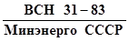
Министерство энергетики и электрификации СССР
ЛЕНИНГРАД
1984
ПРЕДИСЛОВИЕ
Настоящие Правила содержат требования к технологии бетонных работ при возведении и реконструкции гидротехнических сооружений в системе Минэнерго СССР, выполнение которых необходимо для обеспечения рациональной организации работ и получения бетонных и железобетонных конструкций с заданными характеристиками.
Правила составлены в
результате пересмотра 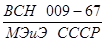
При пересмотре Правил использованы материалы, предоставленные институтами Гидропроект им. С.Я. Жука, ГрузНИИЭГС, Оргэнергострой, строительными организациями: Братскгэсстрой, Красноярскгэсстрой, Нарынгидроэнергострой, Чиркейгэсстрой, а также учтены замечания и предложения Госстроя СССР, ЛПИ им. М.И. Калинина, МИСИ им. В.В. Куйбышева, ЦНИИОМТП, НИИЖБ и ряда других организаций.
В составлении Правил приняли участие: канд. техн. Наук A.П. Бечин; канд. техн. наук Ц.Г. Гинзбург; инж. А.Ф. Зеленин, инж. Г.М. Каргин; инж. М.А. Картелева; канд. техн. наук Л.И. Кудояров; канд. техн. наук Е.В. Лавринович; инж. B.М. Матюшин; инж. Г.К. Симаков; инж. Е.Т. Синотина; канд. техн. наук В.Б. Судаков, инж. Г.П. Суханкин; канд. техн. наук Л.А. Толкачев; инж. М.М. Трункова; канд. техн. наук Р.Н. Шманцарь; инж. B.C. Шангин; канд. техн. наук Б.М. Ерахтин.
Редакторы: канд. техн. наук В.Б. Судаков (ВНИИГ им. Б.Е. Веденеева Минэнерго СССР), канд. техн. наук Л.И. Кудояров (Главниипроект Минэнерго СССР).
|
Министерство |
Ведомственные
строительные |
ВСН 31-83 |
|
Минэнерго СССР |
||
|
Правила производства бетонных |
Взамен |
|
|
МЭиЭ |
|
Внесены Всесоюзным ордена |
Утверждены
протоколом |
Срок |
1.1. Настоящие Правила являются обязательными при выполнении комплекса работ по приготовлению, транспортировке, подаче, укладке бетонной смеси и уходу за бетоном до достижения заданных проектом характеристик бетона, включая контроль качества работ при возведении и реконструкции монолитных бетонных и железобетонных гидротехнических сооружений, строящихся во всех климатических зонах в системе Минэнерго СССР.
Правила не распространяются на производство бетонных работ по подводному бетонированию, торкретированию, изготовлению сборных бетонных и железобетонных конструкций.
1.2. При возведении бетонных и железобетонных конструкций гидротехнических сооружений кроме соблюдения настоящих правил должны выполняться требования соответствующих государственных стандартов, а также СНиП III-45-76.
1.3. Для строительства крупных гидроузлов (сметной стоимостью свыше 250 млн. руб.) проектной организацией на основе настоящих правил должны быть разработаны специальные местные технологические правила, учитывающие конкретные особенности и условия данного строительства. Местные технологические правила должны являться составной частью проекта производства работ и согласовываться со строительной организацией.
2.1. Организация бетонных работ, применяемые материалы и методы бетонирования должны обеспечивать получение бетонной кладки гидротехнических сооружений и конструкций, полностью удовлетворяющей требованиям проекта по прочности при сжатии и растяжении, водонепроницаемости, морозостойкости, стойкости против агрессивного воздействия воды, деформативным характеристикам, трещиностойкости и сдвиговым характеристикам.
2.2. Проектной организацией должны быть определены и экономически обоснованы источники поступления заполнителей, цемента, добавок и воды.
Число видо-марок цемента должно быть не более двух, причем число поставщиков цемента (цементных заводов), как правило, должно ограничиваться одним заводом.
Строительства крупных гидроузлов должны снабжаться цементом по специальным техническим условиям, составленным генпроектировщиком совместно с генподрядчиком и утвержденным в установленном порядке.
2.3. Не позднее чем за полгода до начала бетонных работ должны быть закончены работы по проектированию основных составов бетона. Для этой цели необходимо не менее чем за 1,5 года до начала бетонных работ по основным сооружениям построить и оснастить оборудованием бетонную лабораторию на строительной площадке.
Подбор составов бетона должен производиться в соответствии с действующими указаниями по проектированию составов гидротехнических бетонов (Руководство по проектированию состава гидротехнических бетонов: П 21-74).
Для крупных гидроузлов проектирование, подбор и необходимые исследования бетонов для основных сооружений должны производиться специализированными научно-исследовательскими организациями. Утвержденные генпроектировщиком составы бетона должны не позднее чем за полгода до начала бетонных работ быть переданы генподрядчику для проверки их лабораторией строительства в производственных условиях.
2.4. Для сокращения сроков строительства, трудозатрат и стоимости гидротехнических сооружений производство бетонных работ должно осуществляться индустриальными передовыми методами с применением комплексной механизации. К началу бетонных работ все используемые механизмы должны быть освоены и опробованы.
2.5. При значительной разнице в требованиях к бетонам различных зон сооружений и конструкций и соответственно при значительной разнице в требованиях к качеству материалов для их приготовления в составе бетонных хозяйств для строительства крупных гидроузлов следует предусматривать возможность разделения технологических линий для приготовления отдельно морозостойких (Мрз ≥ 200) и кавитационностойких бетонов и отдельно - бетонов внутренней и подводной зон.
Такие технологические линии должны быть рассчитаны на дифференцированную подготовку заполнителей в соответствии с требованиями действующих норм или использование заполнителей из разных источников.
2.6. Бетонная смесь должна приготовляться на центральном автоматизированном бетонном заводе или заводе-автомате с программным управлением со смесителями емкостью не менее 1000 л. Приготовление бетонной смеси на нескольких заводах допускается лишь при обосновании технико-экономическими расчетами.
2.7. Для строительства крупных гидроузлов с бетонными плотинами надлежит, как правило, использовать бетонные заводы цикличного действия в сочетании с заводами непрерывного действия. Целесообразное соотношение мощностей этих заводов устанавливается при разработке проекта производства работ.
Бетонные заводы должны создаваться по типовым проектам. Проектирование и строительство индивидуальных бетонных заводов допускается лишь при невозможности использования типовых заводов.
Бетонные заводы для строительства гидроузлов должны быть оборудованы устройствами для введения в бетонную смесь и пластифицирующих и воздухововлекающих добавок с раздельными трактами их дозирования, а при необходимости и дисперсных минеральных добавок, а также устройствами для подогрева и охлаждения составляющих бетонных смесей и установками для контрольного грохочения крупного заполнителя.
2.8. До начала укладки бетона в основные сооружения бетонное хозяйство строительства должно быть принято в постоянную эксплуатацию в соответствии с проектом.
Для строительства гидротехнических сооружений с объемом бетона более 1 млн. м3 при проектировании бетонного хозяйства следует предусматривать разделение его на очереди, обеспечивающие последовательный ввод в эксплуатацию смесительных цехов с одновременным вводом технологических линий подготовки заполнителей по полной проектной схеме равноценной мощности.
2.9. Помещения бетонного хозяйства и коммуникации подачи заполнителей и бетонной смеси должны быть изолированы от влияния низких и высоких температур воздуха, а также инсоляции и снабжены необходимыми обогревательными, охладительными и обеспыливающими устройствами.
2.10. При строительстве каскада гидроэлектростанций следует предусматривать возможность полного или частичного использования одного и того же бетонного хозяйства для последовательного возведения двух-трех смежных гидроузлов с организацией массовых перевозок бетонных смесей на расстояния до 50 км.
2.11. Транспортирование бетонной смеси от бетонного завода к месту укладки должно производиться с применением средств и механизмов, предусмотренных проектом производства работ.
Принятые способы транспортирования бетонной смеси должны гарантировать сохранение однородности, необходимой степени подвижности или жесткости и заданной температуры бетонной смеси.
2.12. Укладка бетонной смеси в блоки бетонирования должна производиться в последовательности, указанной проектом производства работ. Размеры блоков бетонирования и тип применяемой разрезки сооружения на блоки бетонирования (секционная, столбчатая) определяются технико-экономическими расчетами исходя из расчетной интенсивности бетонных работ и термонапряженного состояния бетонной кладки в строительный и эксплуатационный периоды.
2.13. При разработке проектов производства бетонных работ необходимо предусматривать возможность совмещения строительных швов с температурно-деформационными конструктивными швами, с тем чтобы, увеличив плановые размеры блоков бетонирования, обеспечить возможность использования полной комплексной механизации бетонных работ и сократить объем трудоемких вспомогательных работ (опалубочных, цементационных и т.п.).
2.14. Для рациональной организации механизированной укладки бетонной смеси в строительные блоки сооружений необходимо предусматривать следующее:
а) производительность выбранных бетонных заводов, средств транспорта и укладки, занятых на подаче, разравнивании и уплотнении бетонных смесей, должна быть взаимно увязана и соответствовать расчетной интенсивности бетонирования сооружения;
б) производительность механизмов, используемых на отдельных операциях (подаче, разравнивании, уплотнении), должна быть кратна расчетной производительности бетоноукладочного комплекта - расчетной интенсивности приходящегося на него потока бетонной смеси;
в) технология укладки бетонной смеси (объем подаваемых порций бетонной смеси, высота и число одновременно укладываемых слоев в блоке, перекрываемая площадь слоев и др.) должна быть увязана с производительностью бетоноукладочных средств, занятых на ее подаче, разравнивании и уплотнении.
2.15. Уплотнение бетонной смеси в блоках сооружений или конструкций должно производиться с применением механизированных средств с использованием подвесных вибропакетов и только в исключительных случаях, в труднодоступных местах,- при помощи одиночных (ручных) глубинных или поверхностных вибраторов.
2.16. С целью улучшения термонапряженного состояния бетонных плотин и создания благоприятного температурного режима бетонной кладки простыми средствами их возведение должно производиться равномерно по всему фронту с перерывами в укладке смежных по высоте блоков в пределах 1 - 10 сут.
Напорная и низовая грани бетонных плотин во время строительства должны быть защищены от резких перепадов температур.
2.17. При включении в проект производства работ для конкретного гидроузла местных технологических правил бетонирования (п. 1.3) следует разрабатывать типовые технологические карты на основные операции, выполняемые в ходе бетонных работ. Рекомендуемая форма технологических карт приведена в приложении 3.
2.18. Качество бетонной смеси и бетона на строительстве должно систематически контролироваться строительной лабораторией и технической инспекцией, состоящей из квалифицированных работников.
2.19. Контрольная документация бетонной инспекции и лаборатории должна сохраняться и предъявляться правительственной комиссии при приемке сооружений в эксплуатацию, а затем передаваться Заказчику. Контрольная документация должна состоять из материалов, необходимых для суждения о заданных проектом свойствах бетона в сооружении, однородности и монолитности, а также о всех производственных обстоятельствах, имеющих значение для оценки качества бетона.
2.20. На все краны, применяемые для производства бетонных работ, должны составляться и систематически заполняться производственные паспорта (техническая характеристика, данные наблюдений и осмотров, сведения о всех отказах и ремонтах).
2.21. Контроль работы механизмов или групп механизмов необходимо осуществлять, как правило, с помощью самопишущих приборов с последующим хранением записей в соответствующем порядке в течение всего времени строительства объекта.
2.22. При производстве бетонных работ должны соблюдаться требования главы III части СНиП по технике безопасности в строительстве.
Требования к бетону, к бетонной смеси и материалам для приготовления бетона
3.1. Марки бетона устанавливаются в соответствии с ГОСТ 4795, СНиП II-56-77 и II-54-77. При этом должно быть назначено минимально необходимое число основных марок, приготовление и укладка которых должны вестись одновременно.
3.2. Для массивных гидротехнических сооружений с зональной разрезкой требования к прочности, водонепроницаемости и морозостойкости должны быть установлены дифференцированно, в строгом соответствии с фактическими условиями работы бетона различных зон и частей сооружений.
Для крупных бетонных плотин при равномерном их наращивании следует дифференцировать требования к бетону внутренней и подводной зон в высотном плане, когда это не приводит к увеличению числа одновременно используемых марок бетона.
3.3. Марки бетона по прочности и водонепроницаемости должны, как правило, назначаться в возрасте 180 сут, а для массивных бетонных сооружений с объемом бетона более 1 млн. м3 - 360 сут. Марки бетона по морозостойкости назначаются в возрасте 28 сут.
В случае укладки бетона в осенне-зимний или зимний период, когда среднесуточная температура наружного воздуха ниже 0 °С или минимальная суточная температура наружного воздуха минус 5 °С и ниже, разрешается устанавливать показатели бетона по прочности в возрасте 28, 60 и 90 сут. Более ранние, чем 180 сут, сроки назначения марок бетона по прочности и водонепроницаемости устанавливаются при сокращенных сроках строительства, более раннем вводе конструкций в эксплуатацию или небольших объемах бетонных работ с соответствующим обоснованием выбранного марочного возраста в проекте.
В проектной документации и в заказных спецификациях, поступающих на бетонный завод, необходимо указывать установленный марочный возраст для каждой марки бетона.
3.4. Подвижность и жесткость бетонной смеси, укладываемой в монолитные конструкции, должны назначаться в зависимости от размеров конструкции, густоты армирования, способов транспортирования и применяемых средств уплотнения бетонной смеси при ее укладке и должны обеспечивать получение бетонных конструкций без дефектов.
Ориентировочные величины подвижности (осадки конуса) бетонной смеси в момент ее укладки назначаются в соответствии с табл. 1 и уточняются технической инспекцией (строительной лабораторией) исходя из реальных условий бетонирования.
Для железобетонных конструкций с очень большим насыщением арматурой (свыше 1,5 %) допускается применение литых бетонных смесей без виброуплотнения.
3.5. При применении для массивных конструкций (внутренние зоны гравитационных плотин и пр.) малоцементного бетона с нулевой осадкой конуса жесткость бетонной смеси на месте укладки должна составлять 20 - 30 с.
3.6. Оценка подвижности и жесткости бетонной смеси производится в соответствии с ГОСТ 10181.0-81 - 10181.1-81.
Таблица 1
|
Осадка стандартного конуса, см |
|
|
Массивные бетонные конструкции без рабочей арматуры |
1 - 3 |
|
Массивные армированные конструкции с содержанием арматуры до 0,5 % |
3 - 6 |
|
Железобетонные конструкции с содержанием арматуры до 1 % |
6 - 8 |
|
Железобетонные конструкции, сильно насыщенные арматурой (более 1 %) |
8 - 12 |
3.7. Подвижность и жесткость бетонной смеси на выходе из бетонного завода задаются технической инспекцией (лабораторией) с учетом их изменения за время транспортирования и подачи смеси до места укладки в блоке.
3.8. Рабочие составы (рецептуры), передаваемые лабораториями на бетонные заводы, должны предусматривать выпуск бетонных смесей 3 - 4 типовых подвижностей, установленных для данного строительства (по типу табл. 1).
3.9. Рабочие составы (рецептуры) бетонной смеси устанавливаются строительной лабораторией, согласовываются с проектной организацией и утверждаются главным инженером строительства.
3.10. Лаборатория строительства должна систематически вести наблюдение за приготовлением бетонной смеси и своевременно корректировать составы бетонной смеси в соответствии с изменениями в технологии бетонных работ и в соответствии с характеристиками реально используемых материалов для бетона.
При этом персонал лаборатории должен руководствоваться указаниями Инструкции по организации и работе построечных лабораторий бетона и строительных материалов: ВСН 011-67/Минэнерго СССР.
3.11. Выбор материалов для гидротехнических бетонов (вяжущих, поверхностно-активных добавок, тонкомолотых и других добавок, песка, крупного заполнителя и воды) производится в соответствии с ГОСТ 4797-69 и 10268-80.
Применение заполнителей с прерывистой гранулометрией разрешается лишь в исключительных случаях, если целесообразность их применения будет доказана экспериментально и подтверждена технико-экономическими расчетами.
3.12. При установлении расхода цемента необходимо учитывать его потери, вызванные производственными условиями. Величина этих потерь устанавливается совместно проектной и строительной организациями.
3.13. В целях снижения расхода цемента необходимо применять гравий или щебень с возможно большей крупностью. При этом следует учитывать ограничения, указанные в п. 3.14 - 3.17.
3.14. Заполнители с крупностью зерен, превышающей 120 мм, могут применяться при соответствующем технико-экономическом обосновании в каждом отдельном случае.
3.15. Верхний предел крупности заполнителей в монолитном бетоне не должен превышать 1/3 наименьшего размера конструкции, а в железобетонных и армированных конструкциях - 3/4 наименьшего расстояния в свете между стержнями арматуры.
При подаче бетона пневмонагнетателями и бетононасосами наибольшая крупность заполнителей не должна превышать 1/2 наименьшего расстояния между арматурными стержнями.
3.16. При бетонировании плит крепления откосов грунтовых сооружений и облицовок каналов наибольшая крупность зерен заполнителя не должна превышать 1/3 их толщины.
3.17. Выбор наибольшей крупности зерен заполнителей в бетонных смесях должен быть обязательно увязан с техническими характеристиками оборудования бетонных заводов, средств доставки бетонной смеси к бетонируемым объектам, ее подачи и уплотнения в блоках.
3.18. Применяемые системы подготовки заполнителей, их транспортирования и складирования должны обеспечивать соответствие качества и зернового состава заполнителей в расходных бункерах бетонного завода требованиям ГОСТ 10268-80 к заполнителям для бетона гидротехнических сооружений. При этом следует учитывать указания пп. 2.5 - 2.7.
3.19. Модуль крупности песка для гидротехнических сооружений I и II классов, используемого для приготовления бетона в течение каждого строительного сезона (года), не должен отклоняться более чем на ±0,20 от средней его величины. В том случае, если колебания гранулометрического состава природного песка выходят за указанные пределы (для песков, Подвергаемых промывке, модуль крупности должен определяться с учетом изменения гранулометрии песка при промывке), песок должен быть разделен на две фракции путем гидроклассификации. При разделении песка на фракции граничное зерно, как правило, выбирают так, чтобы объемы получаемых фракций были примерно равны.
При фракционировании песка содержание в каждой из его фракций зерен песка смежной фракции должно быть постоянным; колебания содержания смежной фракции не должны превышать 5 % по массе (от фракции).
Примечание. Для гидротехнических сооружений III и IV классов допускается применение песков с колебаниями величины модуля крупности ±0,30 в течение строительного сезона (года).
3.20. При технико-экономическом обосновании для приготовления бетона могут использоваться искусственные пески, а также смесь естественного песка с искусственным или естественных песков двух месторождений.
Применяемые смеси песков по своим характеристикам должны удовлетворять требования ГОСТ 10268-80.
3.21. Способы транспортирования заполнителей для бетона, их складирования и подачи к бетоносмесительным установкам должны исключать возможность их загрязнения и смешения различных фракций, а также расслоения заполнителей по крупности или смерзания в зимнее время.
В том случае, если используемый крупный заполнитель состоит из хрупких, легко дробящихся и истирающихся пород (известняки, доломиты, песчаники и т.п.) или применяемые транспортные схемы и способы складирования крупных заполнителей не обеспечивают сохранение требуемой чистоты и зернового состава деловых фракций, необходимо предусматривать контрольное грохочение материала перед подачей его на бетонный завод.
3.22. Заполнители, доставленные на склады методом гидротранспорта, а также прошедшие через гидравлические классификаторы или промывочные устройства, должны применяться после выдерживания на складах с дренажными устройствами либо подвергаться принудительному обезвоживанию с целью получения стабильной влажности. Для песка влажность должна быть не более 6 %, а для крупного заполнителя - не более 1 %.
3.23. Необходимые мероприятия по обеспечению требований пп. 3.18 - 3.22 должны быть предусмотрены в проектах карьерного и бетонного хозяйства с учетом конкретных условий строительства.
3.24. Для снижения расхода цемента, а также улучшения основных свойств бетонной смеси и бетона в бетонную смесь при ее приготовлении следует вводить добавки поверхностно-активных веществ. С этой целью на бетонных заводах должны быть предусмотрены устройства, обеспечивающие возможность одновременного введения двух добавок, как правило, пластифицирующей (СДБ) и воздухововлекающей (СНВ или ЛХД).
Выбор оптимальных для конкретных условий поверхностно-активных добавок производится при проектировании составов бетона.
За введением добавок в бетонную смесь должен быть установлен тщательный контроль лаборатории.
3.25. Если для водосбросных или водопропускных трактов проектом предусмотрено применение износостойкого или кавитационностойкого бетона, бетонное хозяйство должно иметь технологическую линию, позволяющую приготавливать бетоны на следующих материалах:
а) песок должен удовлетворять требованиям ГОСТ 10268-80 для морозостойкого бетона гидротехнических сооружений;
б) в качестве крупного заполнителя должен применяться чистый щебень изверженных горных пород, прочностью не менее 100 МПа, а крупностью не более 80 мм для износостойкого бетона и 40 мм для кавитационностойкого;
в) в качестве вяжущего должен применяться чистоклинкерный низкоалюминатный (С3А ≤ 7 %) портландцемент марок 400 - 500 (при отсутствии агрессивности воды-среды) с содержанием C3S в пределах 50 - 55 %; в случае агрессивности воды-среды должен применяться сульфатостойкий портландцемент.
3.26. В заказах на бетонную смесь, передаваемых на бетонные заводы техинспекцией после приемки блока к бетонированию, должны быть указаны: марка бетона по проекту (полностью) с указанием ее марочного возраста, требуемый объем бетона, вид цемента, предельная крупность заполнителей, подвижность (жесткость) бетонной смеси на месте укладки.
Дозирование материалов
3.27. Дозирование составляющих бетонной смеси должно производиться по массе. При контрольной проверке дозирования, результаты которой определяются по данным 30 замеров, не менее 85 % отклонений фактической массы от заданной дозы должны быть не выше указанных в табл. 2.
Таблица 2
|
Точность дозирования, % |
||
|
на автоматизированных бетонных заводах |
на мелких бетоносмесительных установках |
|
|
Цемент и активные добавки, дозируемые в виде порошка |
±1 |
±2 |
|
Заполнители |
±2 |
±3 |
|
Вода и водные растворы добавок (с учетом влаги в заполнителях и добавках) |
±1 |
±2 |
3.28. Нормальная работа всех дозирующих устройств должна обеспечиваться выполнением требований специальных Инструкций заводов-изготовителей на технологическое оборудование.
3.29. Метрологическая проверка дозаторов и контрольная проверка погрешности дозирующих устройств должны проводиться не реже одного раза в месяц.
3.30. Бетонные заводы производительностью свыше 200 тыс. м3/год должны оснащаться приборами для регистрации массы фактически отдозированных на замес материалов и суммирования расхода материалов за рабочую смену.
3.31. Количество воды в замесе устанавливается с обязательным учетом фактической влажности заполнителей, особенно песка, и корректируется лабораторией строительства; при этом должна быть обеспечена требуемая точность дозирования составляющих бетона в соответствии с табл. 2.
3.32. Весовые дозаторы для заполнителей могут применяться как индивидуальные, так и суммирующие. Управление дозаторами должно быть, как правило, автоматическое, в отдельных случаях для бетоносмесителей емкостью до 1200 л (по загрузке) допускается ручное управление.
3.33. Кроме непосредственной проверки точности работы дозирующего устройства необходимо контролировать все другие особенности его работы (полнота опорожнения, возможность переполнения дозатора и т.п.), которые могут оказывать влияние на количество материала, поступающего в барабан бетоносмесителя.
3.34. Для обеспечения бесперебойности работы весовых дозаторов, особенно при напряженной круглосуточной их работе, необходимо ежедневно производить профилактические осмотры дозаторов с устранением всех возникающих неполадок.
3.35. Лаборатория строительства должна вести наблюдения за правильностью дозировки составляющих бетонной смеси и изменять дозировку ее при изменениях влажности и зернового состава заполнителей. При этом:
а) бетонные заводы должны быть оборудованы датчиками-влагомерами для автоматического определения влаги, содержащейся в заполнителях, направляемых в бетоносмеситель;
б) влажность песка и крупных заполнителей должна определяться ежесуточно и дополнительно при поступлении новых партий, а также после выпадения осадков;
в) определение зернового состава заполнителей необходимо производить не реже одного раза в сутки и, кроме того, каждый раз при переходе к расходованию нового штабеля.
3.36. Активные минеральные добавки (зола уноса и т.п.) при приготовлении бетонной смеси вводятся в бетоносмеситель одновременно с цементом.
При введении добавок ПАВ в виде водных растворов их следует дозировать по массе и подавать в бетоносмеситель одновременно с водой.
3.37. Выбор применяемых добавок должен быть обоснован специальным подбором состава бетона и его исследованиями, выполненными лабораторией строительства с привлечением научно-исследовательской организации Минэнерго СССР. Выбор применяемых добавок должен быть согласован с проектной организацией.
3.38. В случае необходимости производится охлаждение или подогрев составляющих бетонной смеси путем соответствующего охлаждения или подогрева воды, заполнителей или добавления в замес чешуйчатого льда.
Рекомендуется следующая последовательность использования средств для охлаждения - подогрева составляющих бетонной смеси в зависимости от требуемой степени регулирования ее температуры:
Летний период
Охлаждение воды затворения
Присадка искусственного льда в бетоносмеситель
Охлаждение крупного заполнителя
Охлаждение песка
Зимний период
Подогрев воды затворения
Подогрев песка
Подогрев крупного заполнителя.
3.39. Расходные бункеры для заполнителей и цемента должны полностью выгружаться и очищаться перед загрузкой иных видов материалов, а бункеры выдачи бетонной смеси - при изменении марки бетона.
3.40. Применяемые в настоящее время бетоносмесительные установки непрерывного действия могут иметь различную конструкцию дозаторов и смесительного барабана. Управление бетоносмесительными заводами непрерывного действия должно быть автоматизированным.
3.41. Контроль и регулирование дозаторов и бетоносмесителей непрерывного действия, а также уход за ними производится в соответствии с Инструкциями заводов-изготовителей.
3.42. Загрузка бетоносмесителей непрерывного действия должна производиться непрерывно и одновременно всеми отдозированными составляющими бетона. При невыполнении этого требования бетонная смесь должна быть забракована.
Перемешивание бетонной смеси
3.43. Для приготовления бетонной смеси могут применяться бетоносмесители как периодического, так и непрерывного действия. При выборе типа и емкости бетоносмесителя следует учитывать: интенсивность приготовления, наибольшую крупность заполнителя и жесткость бетонной смеси, принятые проектом.
3.44. Расходные бункеры для цемента и заполнителей должны выполняться с вертикальными стенками и коническим несимметричным днищем, наклон стенок которого образует с горизонтом угол не менее 55°. Выпускные отверстия должны обеспечивать свободное истечение материалов.
3.45. Загрузка бункера заполнителями должна производиться так, чтобы поток их был направлен вертикально по оси бункера.
Во время работы бетонного завода расходные бункеры следует поддерживать в наполненном не менее чем на 1/3 состоянии.
3.46. Материалы из дозаторов должны поступать в барабан бетоносмесителя без потерь. Необходимо исключать возможность утечек цемента. Потери цемента должны предотвращаться надлежащим уплотнением стыков, устройством щитков у входных отверстий смесителей и уменьшением высоты падения материала при подаче его в барабан.
3.47. Загрузка бетоносмесителя периодического действия из дозирующих устройств должна производиться в следующем порядке: вначале в смеситель подается вода; после заливки 15 - 20 % воды, требуемой на замес, загружают одновременно цемент, добавки и заполнители, не прерывая подачи воды до требуемой нормы.
3.48. Загрузка бетономешалки в зимнее время должна производиться в следующем порядке:
а) подается вода, нагретая до 60 - 85 °С, и щебень; затем производится перемешивание для интенсификации теплообмена;
б) подается цемент и песок.
3.49. Продолжительность перемешивания бетонной смеси, считая с момента окончания загрузки бетоносмесителя до момента начала выпуска бетонной смеси, следует устанавливать экспериментально. Наименьшая продолжительность перемешивания бетонной смеси в теплое время года должна приниматься по табл. 3.
Таблица 3
|
Емкость барабана бетоносмесителя (по выходу), л |
Наименьшая продолжительность перемешивания бетонной смеси с объемной массой более 2200 кг/м2, с |
|
|
при осадке конуса |
||
|
до 6 см |
более 6 см |
|
|
800 |
120 |
90 |
|
1000 |
120 |
90 |
|
1600 |
150 |
120 |
|
2000 |
180 |
150 |
3.50. Установленную продолжительность перемешивания следует контролировать автоматически. При отсутствии счетчика допускается применение электросекундомера с регистрацией его работы.
3.51. Продолжительность перемешивания бетонной смеси в бетоносмесителях непрерывного действия определяется их паспортной характеристикой (длиной барабана, углом его наклона, количеством оборотов и др.) и в зависимости от качества получаемой бетонной смеси должна корректироваться по указаниям строительной лаборатории и в соответствии с инструкциями заводов-изготовителей.
3.52. При опорожнении бетоносмесителя должны быть приняты меры против расслоения выгружаемой бетонной смеси.
Для этого рекомендуется устанавливать направляющие устройства так, чтобы поток выгружаемой бетонной смеси направлялся вертикально в центр раздаточного бункера, бадьи или других транспортных средств.
3.53. Бетонная смесь по выходе из бетоносмесителя должна иметь температуру, установленную проектом, в зависимости от наружной температуры, вида транспорта, бетонируемой конструкции и местных условий.
3.54. Периодически должна производиться проверка соответствия составов бетонной смеси, выдаваемых бетоносмесителями, заданным составам. Для этой цели не реже одного раза в месяц должны отбираться пробы бетонной смеси, которые подвергаются отмывке и высушиванию для определения зернового состава заполнителей, количества цемента и воды в смеси.
Общие указания
4.1. Транспортирование бетонной смеси должно быть организовано так, чтобы бетонная смесь на месте укладки имела заданную подвижность (жесткость) и связность.
4.2. Необходимая подвижность бетонной смеси при выпуске ее бетонным заводом и предельно допускаемая продолжительность транспортирования смеси должны устанавливаться строительной лабораторией в зависимости от температуры наружного воздуха и смеси и применяемых составов бетона.
Для бетонной смеси без добавок-регуляторов схватывания время транспортирования смеси от момента ее приготовления до момента подачи в блоки сооружения ориентировочно не должно превышать значений, указанных в табл. 4.
Таблица 4
|
Температура бетонной смеси и наружного воздуха, ºС |
Предельно допустимая продолжительность транспортирования смеси, ч |
|
5 - 10 |
1,5 |
|
10 - 15 |
1,25 |
|
15 - 20 |
0,75 |
|
20 - 25 |
0,5 |
При применении цементов с удлиненными сроками схватывания или добавок-замедлителей схватывания (СП, СДБ в повышенных дозировках и т.д.) предельная продолжительность транспортирования смесей может быть увеличена в 1,5 - 3 раза.
4.3. При каскадном методе строительства гидроузла с массовой перевозкой бетонной смеси на расстояние свыше 15 км выбор добавок, предотвращающих расслоение смеси при транспортировании, и добавок-регуляторов схватывания, - а также определение предельно допустимой продолжительности транспортирования смеси должны производиться специализированной научно-исследовательской организацией Минэнерго СССР совместно с лабораторией строительства.
4.4. Способы транспортирования бетонной смеси до блока бетонирования определяются проектом производства работ и должны быть увязаны с возможностями бетонного хозяйства, характеристиками применяемых бетонных смесей и обеспечивать требуемую интенсивность бетонных работ. Для транспорта смеси должны использоваться, как правило, специализированные средства: при порционном способе - автобетоновозы, автобадьевозы, автосилобусы, автобетоносмесители, железнодорожные платформы для перевозки бадей или оборудованные опрокидными ковшами и другие; при непрерывном способе - ленточные конвейеры, бетононасосы и пневмобетоноукладчики.
4.5. Транспортные средства должны:
а) обеспечивать возможность перемещения бетонных смесей с требуемой крупностью зерен заполнителей, требуемой подвижностью и т.д.;
б) предохранять смесь в пути от воздействия атмосферных осадков, высоких и низких температур воздуха, ветра и солнечной радиации;
в) предотвращать быструю потерю подвижности смеси и значительное ухудшение ее однородности;
г) исключать потери цементного раствора и смеси в пути и при перегрузках;
д) обеспечивать минимальные затраты времени от момента приготовления смеси до ее поступления на место укладки;
е) обеспечивать возможно меньшие затраты труда на транспорт смеси;
ж) обладать высокой надежностью.
Автомобильный и железнодорожный виды транспорта
4.6. Полезная емкость транспортного средства (бетоновоза, силобуса, бадьевоза и т.д.) должна быть кратна объему замеса бетоносмесителя завода цикличного действия или бункера-накопителя завода непрерывного действия.
4.7. Загруженные на бетонном заводе транспортные средства должны снабжаться металлическими жетонами или бирками с указанием марки бетона и номера крана, под который она доставляется. У места приема бетонной смеси рекомендуется вывешивать хорошо видимую табличку с указанием требуемой марки бетона.
4.8. При транспортировании бетонной смеси повышенной пластичности особое внимание следует уделять местам примыкания заднего борта к кузову автосамосвала. При необходимости следует его уплотнять прокладками из листовой резины.
4.9. Разгрузка применяемых транспортных средств должна производиться постепенно в пределах 15 - 30 с, при этом транспортные средства должны обеспечивать полное их опорожнение от бетонной смеси. Очистка и промывка транспортных средств от налипшей бетонной смеси должна производиться не реже одного раза в смену.
4.10. Не допускается в процессе очистки кузовов автосамосвалов и силобусов, а также бадей и бункеров подвергать их ударному воздействию ручным инструментом: кувалдами, ломами и т.п. При их разгрузке следует применять вибраторы.
4.11. Промывка кузовов автобетоновозов всех типов и бадей должна производиться на специальных круглогодично действующих промывочных пунктах.
Ленточные конвейеры
4.12. Ленточные конвейеры могут применяться как для транспортирования бетонной смеси, так и для ее распределения по бетонируемому блоку. Применять ленточные конвейеры следует, как правило, в сочетании с бетонными заводами непрерывного действия.
Рекомендуется применять специальные высокоскоростные автоматизированные конвейерные системы, предназначенные для транспортирования и подачи бетонных смесей и оснащенные бетонораспределительными механизмами (распределителями). Монтаж и эксплуатация этих систем должны вестись в соответствии с инструкциями предприятий-изготовителей.
В случае невозможности применения специальных высокоскоростных конвейерных систем для транспорта бетонных смесей допускается использовать конвейеры общего назначения с соблюдением указаний пп. 4.13 - 4.22.
4.13. При применении специальных бетонотранспортных конвейеров скорость движения ленты, как правило, не должна превышать 4 м/с, а при применении общестроительных - 1 м/с.
Толщина слоя бетонной смеси на ленте должна быть максимально возможной для данной конструкции конвейера. На рабочих ветвях конвейеров должны устанавливаться саморегулирующиеся секции роликоопор.
4.14. Секции магистральных конвейеров общего назначения, изготавливаемых промышленностью, имеют, как правило, длину 400 - 500 м. В пределах этой длины стыки лент должны осуществляться только путем вулканизации. Шарнирные соединения не допускаются.
4.15. Угол наклона конвейера не должен превышать значений, приведенных в табл. 5.
Большие углы наклона конвейеров (до 30°) допускаются при применении специальных бетонотранспортных конвейеров.
Таблица 5
|
Допустимый угол наклона конвейера, град |
||
|
при подъеме |
при опускании |
|
|
до 4 |
18 |
12 |
|
4 ÷ 6 |
15 |
10 |
4.16. Приводные барабаны общестроительных конвейеров должны быть оборудованы скребками, обеспечивающими возврат раствора в состав бетонной смеси. Нижняя (холостая) ветвь ленты конвейера должна быть защищена съемными щитками. Верхняя (рабочая) ветвь ленты должна иметь лотковое очертание. Наклон наружных роликов к горизонту должен быть не менее 30°. Прилипший к нижней ветви конвейера раствор должен удаляться гидросмывом.
4.17. Назначение ширины ленты конвейера для подачи бетонной смеси следует производить исходя из данных табл. 6.
4.18. Загрузка ленточного конвейера производится через питатели, обеспечивающие равномерное поступление смеси на ленту. При бетоносмесителях непрерывного действия допускается загрузка ленты непосредственно из смесителя.
Таблица 6
|
Производительность конвейера при скорости ленты 1 м/с, м3/ч |
Предельная крупность заполнителя, мм |
Ширина ленты, мм |
|
70 |
80 |
650 |
|
110 |
100 |
800 |
|
170 |
120 |
1000 |
|
250 |
150 |
1200 |
4.19. Разгрузку ленты рекомендуется производить с торца конвейера. Разгрузку на каком-либо участке конвейера допускается производить только с применением виброплужковых устройств конструкции Гидропроекта им. С.Я. Жука.
4.20. В процессе эксплуатации конвейеров строительная лаборатория обязана систематически проверять качество транспортируемой бетонной смеси с тем, чтобы были приняты необходимые меры по предотвращению расслаивания смеси и потери ее растворной составляющей.
4.21. Все конвейерные секции должны быть снабжены устройствами, обеспечивающими их выключение при внезапной остановке одной из них.
4.22. Все магистральные ленточные конвейеры в целях предохранения их от воздействия низких температур наружного воздуха, атмосферных осадков, ветра и солнечной радиации должны размещаться в отепленных несгораемых галереях. Галереи должны иметь необходимые энергетические коммуникации и средства связи.
Трубопроводный транспорт
4.23. Применение бетононасосов, совмещающих горизонтальное и вертикальное транспортирование бетонной смеси, эффективно при бетонировании густоармированных конструкций и труднодоступных мест: при устройстве туннелей, мостов, возведении зданий гидроэлектростанций, подпорных стен и других конструкций.
4.24. В качестве крупного заполнителя для бетонной смеси может применяться гравий или щебень. Количество зерен наибольших размеров в крупном заполнителе не должно превышать 15 %, а лещадных и игловатых - 5 % по массе. Рекомендуемое соотношение мелкого и крупного заполнителя в общей массе приведено в табл. 7.
4.25. Соотношение между максимальным размером зерен крупного заполнителя и внутренним диаметром трубопровода должно быть не менее 1:2 для гравия и 1:3 для щебня. Трубы диаметром менее 100 мм следует применять только после получения результатов опытного нагнетания смеси, так как при их использовании резко сокращается дальность ее перемещения.
Таблица 7
|
Содержание в смеси заполнителей по массе, % |
||
|
песка |
крупного заполнителя |
|
|
Гравий |
35 - 45 |
65 - 55 |
|
Щебень |
40 - 50 |
60 - 50 |
4.26. Для бетононасосов отечественного производства рекомендуются следующие показатели бетонной смеси при нагнетании: водоцементное отношение 0,40 - 0,65, осадка стандартного конуса не менее 4 см для бетононасосов с гидравлическим приводом и 8 см для бетононасосов с электромеханическим приводом.
Бетонные смеси в обязательном порядке должны приготовляться с добавками поверхностно-активных веществ - СДБ, ЛХД, СНВ и др.
4.27. Подбор состава бетонной смеси должен осуществляться строительной лабораторией. За оптимальный состав принимается тот, который позволяет получить удобоукладываемую смесь, обеспечивающую требуемые свойства бетона при минимальном расходе цемента.
4.28. Монтаж и эксплуатацию бетононасосов и трубопроводов необходимо производить в соответствии с действующими инструкциями, обращая особое внимание на надежность соединения звеньев трубопроводов.
Таблица 8
|
Эквивалентная длина по горизонтали, м |
|
|
1 м по вертикали |
8 |
|
Колено |
|
|
90° |
12 |
|
45° |
7 |
|
30° |
5 |
|
15° |
3 |
4.29. Длина трубопроводов и число колен в системе бетоновода в целях сокращения возникающих сопротивлений перемещению бетонной смеси должны быть минимальными. Колен под углом 90° следует избегать, заменяя их двумя коленами под углом 135° с прямой вставкой между ними.
4.30. Приведенную длину бетоноводов следует исчислять по данным табл. 8.
4.31. На горизонтальных участках для удобства промывки бетоновод рекомендуется укладывать с уклоном около 5°. Вертикальные или наклонные участки бетоновода следует монтировать не ближе 7 - 8 м от бетононасоса.
4.32. Загрузка бетононасоса свежей пластичной смесью должна производиться с транспортных средств через специальный бункер перед бетононасосом, а при благоприятных условиях непосредственно с бетонного завода через раздаточный бункер. Приемный бункер должен быть снабжен специальной решеткой для предотвращения попадания в бетононасос и бетоновод заполнителя с размером более допустимого. Решетку в целях ускорения прохода материала рекомендуется снабжать вибраторами.
4.33. Перед сборкой бетоновода его секции должны быть повторно очищены внутри и снаружи от загрязнения и промыты водой. Внутренняя поверхность бетоновода должна быть непосредственно перед бетонированием увлажнена и смазана путем пропуска между двумя пыжами порции цементного раствора пластичной консистенции состава 1:2.
4.34. Перерывы в подаче бетонной смеси без спуска ее из системы бетоноводов допускаются не более чем на срок до начала схватывания цемента. Следует при этом каждые 5 мин возобновлять нагнетание бетонной смеси по системе в течение 15 - 20 с. При больших перерывах, а также по окончании бетонирования бетоноводы должны быть опорожнены и промыты.
4.35. Утечка цементного раствора из стыков бетоновода не допускается. При появлении утечки необходимо немедленно прекратить работу бетононасоса и принять неотложные меры к ее устранению. Отключенные от магистрали секции бетоновода необходимо сразу же очищать от бетонной смеси.
4.36. При подаче бетонной смеси бетононасосами без манипулятора рекомендуется начинать укладку с наиболее удаленной части блока с постепенным уменьшением длины бетоновода или производить ее подачу в одну точку с распределением поворотными лотками, виброжелобами, виброхоботами.
4.37. Пневмонагнетательные установки следует применять при дальности подачи бетонной смеси не более 160 м по горизонтали или 30 м по вертикали.
4.38. Пневмонагнетатели предназначены для подачи бетонной смеси с осадкой стандартного конуса в пределах 6 - 10 см.
После экспериментальной проверки допускается применение бетонных смесей с большей подвижностью со специальными добавками (СНВ, ЛХД, кремнегель и т.п.), предотвращающими расслоение.
4.39. С целью гашения динамических нагрузок, возникающих при подаче бетонной смеси пневмонагнетателями, следует применять концевые гасители, позволяющие отделять воздух, а также с помощью нижнего выходного патрубка гасителя и гибкого шланга распределять бетонную смесь в бетонируемой конструкции или сооружении.
4.40. Пневмонагнетательные установки подлежат регистрации в местных органах Госгортехнадзора, дающих разрешение на пуск их в эксплуатацию.
4.41. Перед пуском пневмонагнетательной установки ее необходимо проверить на герметичность. Проверяют также исправность запорных кранов, манометров и другого оборудования.
4.42. В процессе работы пневмонагнетательной установки новую порцию бетонной смеси разрешается загружать только после падения давления в ней до нуля.
4.43. Перерывы в работе нагнетательной установки не должны превышать 1 ч, а в жаркое и холодное время - 0,5 ч.
4.44. После окончания работы камеры нагнетателя и бетоноводы промываются водой. При этом емкости нагнетателя промывают водой из шланга, а бетоновод очищают резиновым пыжом при создании давления 0,2 - 0,25 МПа.
4.45. При использовании пневмонагнетательных установок должны соблюдаться инструкции заводов-изготовителей, а также общие правила техники безопасности, предъявляемые при обслуживании оборудования, работающего под давлением.
Общие положения
5.1. Способы подачи бетонной смеси устанавливаются в проектах производства бетонных работ исходя из особенностей конструкции сооружения, топографии и геологии строительной площадки (створа), а также из предъявляемых требований к бетонной смеси, принимаемой толщины укладываемых слоев и допустимой продолжительности их перекрытия.
Для подачи бетонной смеси могут использоваться:
а) автосамосвалы, осуществляющие только подачу бетонной смеси или совмещающие транспортирование смеси и ее подачу;
б) краны, установленные на эстакадах;
в) краны, установленные на основании сооружения, а также на самих сооружениях;
г) передвижные или стационарные кабельные краны;
д) ленточные конвейеры, бетононасосы и пневмобетононагнетатели, совмещающие транспортирование и подачу бетонной смеси.
5.2. В проекте производства работ должны быть определены конструкции эстакад, инвентарных мостиков и других вспомогательных устройств для подачи бетонной смеси в блоки сооружений. Кроме этого, должны быть определены конструкции опор и допустимость их оставления в бетоне сооружений.
5.3. Перед подачей бетонной смеси в блоки должна быть проверена готовность к работе всех средств механизации и вспомогательных устройств, а также необходимых коммуникаций.
5.4. Для подачи бетонной смеси следует применять два типа бадей: неповоротные, перемещаемые от мест загрузки в транспортных средствах, и поворотные (опрокидные), загружаемые из транспортных средств (автосамосвалов) на месте укладки в горизонтальном положении и перемещаемые кранами в блоки бетонирования в вертикальном положении.
5.5. Используя серийно выпускаемое оборудование, нужно компоновать наиболее рациональные комплекты: транспорт - бадья - бетоноукладочный кран, - у которых производительность и грузоподъемность (емкость) каждого звена хорошо согласуются друг с другом и соответствуют расчетной интенсивности бетонирования.
5.6. Большегрузные бадьи емкостью более 6 м3 следует применять при использовании для разравнивания и уплотнения бетонной смеси специальных механизмов, например бульдозеров, манипуляторов с пакетами вибраторов и др.
5.7. При бетонировании массивных сооружений блоками большой площади для уменьшения затрат труда на разравнивание бетонной смеси в блоке и исключения излишних ее перемещений разгрузка подаваемых в блок порций бетонной смеси должна производиться так, чтобы расстояние между центрами масс r разгружаемых порций было равно:
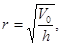
где V0 - объем разгружаемых порций бетонной смеси, м3; h - заданная толщина слоя бетонной смеси в блоке, м.
Вычисленная величина r должна быть округлена в меньшую сторону до 0,25 м.
5.8. При подаче бетонной смеси кабель-кранами должны использоваться, как правило, неповоротные бадьи, загружаемые из транспортных средств на специально устраиваемых площадках. При этом бадьи от кабель-крана не отцепляются. Операции вертикальных и горизонтальных перемещений груза должны совмещаться.
5.9. Бетоноукладочные краны не должны использоваться на вспомогательных операциях по установке в блоках бетонирования опалубки, арматуры, металлоконструкций и пр. Эти операции должны выполняться вспомогательными кранами.
5.10. Во избежание возможного расслоения бетонной смеси при подаче ее в блок в бадьях высота свободного падения смеси должна быть минимальной и не превышать 6 м для неармированных конструкций, 2 м для армированных и 1 м при подаче смеси на перекрытия различных помещений, потерн и галерей.
При крупности заполнителя 80 - 120 мм свободное сбрасывание бетонной смеси с высоты 3 - 6 м допустимо только при ее подвижности 2 - 4 см по осадке конуса.
5.11. Подачу бетонной смеси с помощью виброхоботов следует применять лишь в густоармированных блоках, в местах, не доступных для крановой подачи, при глубине опускания бетонной смеси, превышающей 10 м.
5.12. При глубине опускания бетонной смеси 10 - 30 м следует использовать, как правило, полиэтиленовые хоботы диаметром 400 мм конструкции Гидропроекта им. С.Я. Жука, изготавливаемые силами строительств.
5.13. При глубине опускания бетонной смеси менее 10 м следует применять металлические звеньевые хоботы из элементов длиной 600 - 1000 мм и внутренним диаметром не менее трех размеров наибольшей крупности заполнителя.
5.14. Хоботы, как правило, устанавливаются вертикально: оттягивание в сторону допускается не более 0,25 м на 1 м высоты, причем два нижних звена должны обязательно оставаться вертикальными.
После окончания бетонирования блока хоботы должны быть тщательно очищены от налипшей бетонной смеси и промыты вне места бетонирования.
5.15. В отдельных случаях при подаче бетонной смеси на большую глубину, например в туннель, в шахту, в помещения подземных ГЭС и др. элементы подземных сооружений, взамен хоботов следует использовать изготовляемые силами строительства трубы с фланцевыми соединениями и внутренним диаметром, превышающим в 4 - 5 раз наибольший размер крупного заполнителя.
При глубине подачи до 30 м нижние части труб необходимо снабжать гасителем с затвором, а при большей глубине применять затвор-питатель конструкции Ленинградского филиала Оргэнергостроя, изготовляемый силами строительств. Нормальная работа затвора-питателя обеспечивается при подвижности бетонной смеси в пределах 1 - 3 см.
Подача бетонной смеси автосамосвалами
5.16. Подачу бетонной смеси автосамосвалами с инвентарных мостиков следует производить в случаях, когда необходимо интенсивно вести работы при возведении сооружений с большими площадями и небольшой высоты.
При возведении бетонных плотин или им подобных массивных сооружений подача бетонной смеси непосредственно к месту укладки автосамосвалами с перемещением их по уложенному бетону может производиться при бетонировании однослойными блоками по токтогульскому методу или при применении укатанных бетонов. В последнем случае для подачи бетонной смеси могут использоваться также скреперы.
5.17. Для подачи бетонной смеси в блоки бетонирования следует использовать реконструированный автосамосвал типа «Нарын» либо общестроительные автосамосвалы типа МАЗ-503 или КрАЗ-256 с удельным давлением колес на поверхность бетона, не превышающим 0,6 МПа.
Передвижение автосамосвалов по поверхности ранее уложенного вибрированного бетона разрешается только при достижении его прочности при сжатии не менее 2,5 МПа.
(Поправка).
Перегрузку бетонной смеси из
транспортных средств в автосамосвалы-бетоноукладчики следует производить либо
непосредственно из кузова в кузов, либо с применением перегрузочных бункеров и
кранов в соответствии с действующей Инструкцией по применению послойного
(токтогульского) метода укладки бетона в гидротехническом строительстве: 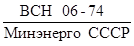
Подача бетонной смеси кранами с поверхности оснований сооружений
5.18. Применение гусеничных и башенных кранов как основных бетоноукладчиков для подачи бетонной смеси с поверхности оснований или бетона возводимых сооружений рекомендуется при возведении сооружений высотой до 80 м.
Крановая подача со строительных эстакад
5.19. Применение строительных эстакад допускается лишь при соответствующем технико-экономическом обосновании.
При их применении необходимо:
а) избегать последовательного поярусного устройства эстакад, так как возведение их очередями значительно увеличивает стоимость и приводит к снижению интенсивности подачи бетонной смеси в блоки сооружений;
б) предусматривать возможность использования инвентарных пролетных строений;
в) использовать в качестве опор бычки и контрфорсы плотин,
5.20. На строительных эстакадах должны устанавливаться высокопроизводительные бетоноукладочные краны башенного или портально-стрелового типов.
Кабель-крановая подача бетонной смеси
5.21. При возведении плотин в условиях относительно не широких, но глубоких каньонов следует применять для подачи бетонной смеси в бетонируемые блоки высокопроизводительные кабель-краны, которые должны устанавливаться таким образом, чтобы обеспечивать укладку бетона в сооружение в полном объеме без их перемонтажа.
5.22. При использовании кабель-кранов для подачи бетонной смеси в возводимое сооружение должны устраиваться площадки для загрузки бадей, которые, как правило, не должны отцепляться от кабель-кранов в процессе работы.
5.23. С целью увеличения производительности кабель-кранов и улучшения условий труда обслуживающего их персонала (машинистов, операторов, бетонщиков) кабель-краны должны оснащаться телеуправлением, телевизионными и другими установками.
5.24. При возведении плотин однослойными блоками по токтогульскому методу или с применением укатанных бетонов целесообразно использовать стационарные кабель-краны с подачей бетонной смеси в передвижные перегрузочные бункеры с последующей развозкой ее к месту укладки автобетоновозами. Такая схема особенно рациональна, если бетонирование ведется под самоподъемным шатром, закрывающим всю горизонтальную поверхность плотины.
6.1. Выбор опалубки определяется типом и размером бетонируемых конструкций, требованиями, предъявляемыми к опалубливаемым поверхностям, и способом производства работ. Характеристики основных типов опалубки и область их применения даны в табл. 9.
Таблица 9
|
Характеристика |
Рекомендуемая область применения |
|
|
Подъемно-переставная (консольная) |
Деревянная или с металлическими балками и фермами заводского изготовления, с возможностью оставления утепления на поверхности бетона |
Бетонируемые блоки гравитационных, арочных и контрфорсных плотин |
|
Несъемная |
а) Железобетонные плиты с гидроизоляцией или теплоизоляцией |
Напорные грани сооружений в подводной зоне |
|
б) Металлические облицовки |
Водоводы, спиральные камеры и др. |
|
|
в) Бетонные блоки |
Надводная зона сооружений |
|
|
г) Железобетонные плиты с арматурой для цементации швов |
Межблочные цементируемые швы в плотинах |
|
|
д) Металлическая сетка |
Межблочные швы армированных сооружений |
|
|
е) Железобетонные плиты, балки и армобалки |
Наружные поверхности стенок, бычков, опалубка галерей, перекрытий над отсасывающими трубами и др. |
|
|
ж) Пазовые конструкции, металлические или комбинированные с использованием железобетонных плит |
Пазы гидромеханического оборудования |
|
|
з) Деревянная с утеплителем |
Напорные грани сооружений |
|
|
Блочная (шатровая) |
Опалубочные щиты, прикрепленные к торцам шатров над бетонируемыми блоками |
Массивные сооружения типа плотин |
|
Разборно-переставная крупнощитовая |
Деревянная, металлическая одно- или многоярусная |
Сооружения типа подпорных и раздельных стенок, голов и камер шлюзов, водосливных граней, подводных и надводных частей зданий ГЭС и др. |
|
Скользящая |
Опалубочные щиты, закрепленные на рамах, перемещаемых домкратами |
Конструкции постоянного сечения (стены, резервуары, водоводы, трубопроводы и др.) |
|
Горизонтально перемещаемая (катучая, туннельная) |
Опалубочные щиты, в том числе криволинейного очертания, закрепленные на пространственном каркасе и перемещаемые вдоль возводимого сооружения на тележке |
Туннельные обделки, водоводы, резервуары, подпорные стенки и др. |
|
Съемная |
Несерийная опалубка из досок, фанеры или других материалов, элементы которой определяются особенностями бетонируемых конструкций и условиями производства работ |
Индивидуальные и уникальные монолитные конструкции; доборные опалубочные элементы |
6.2. Выбор типа и конструкции опалубки должен производиться в проектах производства работ на основании технико-экономических расчетов с учетом особенностей условий строительства и эксплуатации сооружений.
6.3. Независимо от типа и материала опалубки ее обшивка, примыкающая к бетону, должна быть плотной и гладкой; утечки цементного раствора и цементного теста не допускаются.
Нестроганая опалубка допускается только при применении абсорбирующей облицовки.
6.4. Поддерживающие конструкции, крепление опалубки и их прочностные расчеты должны удовлетворять требованиям ГОСТ 23478-79 и 23477-79 и СНиП III-15-76. Опалубка должна снабжаться необходимыми приспособлениями, обеспечивающими ускорение распалубливания и сохранность элементов опалубки.
6.5. Материалы, применяемые для бетонных и железобетонных элементов несъемной опалубки для наружных граней сооружений, а также технология их изготовления должны обеспечивать выполнение требований, предъявляемых ГОСТ 4795-68 к сооружениям в отношении прочности, водонепроницаемости, морозостойкости, износостойкости и эстетики.
6.6. Сборка опалубки из готовых деталей должна производиться с применением кондукторов, шаблонов и приспособлений, обеспечивающих точность размеров и форму собираемых конструкций.
6.7. Металлические элементы, например, стальной или дерево-металлической опалубки, не соприкасающиеся с укладываемым бетоном, должны быть окрашены.
6.8. При изготовлении фанерной опалубки соединение фанерных листов с элементами деревянного каркаса должно производиться преимущественно путем склеивания их водостойким клеем.
При наличии металлического каркаса эти соединения могут осуществляться при помощи болтов с потайными головками.
6.9. Уменьшение размеров поперечного сечения элементов опалубки по сравнению с проектными не должно превышать:
а) для сжатых и растянутых элементов - 5 % площади поперечного сечения:
б) для изгибаемых элементов - 5 % ширины сечения.
6.10. Отклонения от проектных размеров при изготовлении элементов опалубки не должны превышать значений, приведенных в ГОСТ 23478-79 и 23477-79 и СНиП III-15-76.
6.11. Условия перевозки и складирования элементов опалубки должны гарантировать их сохранность от деформации, коррозии и механических повреждений.
6.12. Установка опалубки должна выполняться с соблюдением следующих требований:
а) стропы для монтажа опалубки или захватные приспособления грузоподъемных механизмов должны закрепляться в местах, предусмотренных проектом и отмеченных яркой краской;
б) освобождение устанавливаемых элементов опалубки от крюка или захватного приспособления грузоподъемного механизма допускается только после их временного или постоянного закрепления в проектном положении;
в) способы закрепления опалубки и несущих ее конструкций должны обеспечивать требуемую точность и неизменяемость формы бетонируемого сооружения;
г) крепление несущих элементов, тяжей и расчалок к ранее забетонированным блокам должно производиться с учетом прочности бетона, достигаемой к моменту передачи нагрузки на эти крепления;
д) тяжи, стяжки и другие элементы креплений не должны препятствовать бетонированию;
е) перед началом бетонирования на опалубку должны быть нанесены отметки верха блока и другие необходимые обозначения.
6.13. Для облегчения распалубки лицевую поверхность опалубки следует покрывать составами, уменьшающими ее сцепление с бетоном, но не ухудшающими его качества (известковое молоко, меловая эмульсия для деревянной опалубки, отработанное машинное масло для металлической).
6.14. При приемке установленной опалубки подлежат проверке:
а) правильность ее установки и закрепления, включая все ее элементы в соответствии с проектом;
б) плотность сопряжений как отдельных элементов в щитах опалубки, так и сопряжений между ними и ранее уложенным бетоном.
Проверка правильности установки опалубки должна производиться, как правило, с применением геодезических инструментов.
6.15. При изготовлении и сборке всех типов опалубки, кроме опалубки водосливных поверхностей, разрешаются следующие допуски:
а) уменьшение и увеличение толщины элементов в конструкциях, где это не отражается на монтаже металлических конструкций, - не свыше 0,02 проектной толщины, но не более 2 см;
б) изменение размеров конструкций и пролетов в частях сооружений, где это отражается на монтаже металлических конструкций, - не более 1 см;
в) изменение размеров штраб, оставляемых для установки металлических конструкций, не превышающее 0,05 проектного размера в сторону увеличения, но не более 2 см;
г) отступление от прямолинейности граней сооружения, состоящего из отдельных элементов, не превышающее 1/2 толщины шва между отдельными элементами, но не более 1 см;
д) изменение проектных величин в элементах, где это отражается на основных габаритах сооружения, не превышающее 0,01 проектного размера, но не более 2 см.
6.16. При применении на наружных поверхностях гидротехнических сооружений несъемной опалубки из железобетонных плит со слоем гидроизоляции или теплоизоляции основное внимание должно уделяться сохранности слоев этих покрытий и тщательности герметизации стыков между плитами.
6.17. При применении в качестве опалубки сборных бетонных и камнебетонных блоков или железобетонных плит с расчетной или конструктивной арматурой, жестко соединяемых с бетоном сооружения, к ним предъявляются следующие требования:
а) поверхность опалубочного блока или плиты, обращенная к укладываемому бетону, должна быть шероховата и очищена от грязи и наледи, а металлические закладные детали - от отслаивающейся ржавчины;
б) после придания армоплитам проектного положения и их раскрепления промежутки между ними с наружной стороны закрываются нащельниками, которые после бетонирования снимаются;
в) в зимнее время перед началом бетонирования опалубочные бетонные блоки должны отогреваться до положительных температур на глубину не менее 100 мм. Необходимое для этого время и температурный режим устанавливаются строительной лабораторией.
6.18. Для кавитационностойких и износостойких водосбросных поверхностей бетона лицевая поверхность опалубки должна иметь абсорбирующий слой, способствующий упрочнению поверхностного слоя бетона.
6.19. Качество используемой опалубки для поверхностей бетона, подверженных воздействию кавитации, по неровностям должно отвечать следующим требованиям:
а) при скорости потока до 30 м/с не допускаются неровности (выступы, уступы и др.), превышающие 3 мм.
б) при скорости потока более 30 м/с неровности не должны превышать 2 мм.
Неровности контролируются шаблоном для плоских поверхностей и лекалами для криволинейных при длине шаблона и лекала, равной 1,5 м.
Крепление опалубки при бетонировании сооружений с кавитационностойкими поверхностями должно быть таким, чтобы его элементы (анкера, тяжи) не выходили на лицевую поверхность бетона.
6.20. При применении облицовок для кавитационностойких поверхностей следует руководствоваться Методическими рекомендациями по технологии изготовления бетона, подверженного воздействию кавитации, и износостойких облицовок гидротехнических сооружений: П 58-72/ВНИИГ.
6.21. В процессе бетонирования любого гидротехнического сооружения следует вести постоянное наблюдение за состоянием установленной опалубки.
При обнаруженных деформациях или смещении отдельных элементов опалубки должны немедленно приниматься меры к их устранению и в случае необходимости - временному прекращению бетонирования.
6.22. Распалубливание блоков допускается при достижении бетоном прочности не менее 1,5 МПа и условии соблюдения требований теплового режима блока (гл. 9).
6.23. Удаление опалубки должно производиться способами, исключающими возможность повреждения распалубливаемых поверхностей бетона, а также самой опалубки.
6.24. Щиты, снимаемые при помощи грузоподъемных механизмов, должны быть предварительно отделены от бетона.
6.25. При повторном использовании опалубка должна быть обязательно очищена от старого бетона, в случае необходимости отремонтирована.
6.26. Для образования штраб на поверхностях цементируемых швов следует применять многооборачиваемую штрабообразующую опалубку, изготовляемую из металла или стеклопластика.
6.27. Перестановка опалубочных щитов, в том числе и консольного типа, а также монтаж железобетонной или другой опалубки несъемного типа, как правило, должны производиться вспомогательными кранами или автопогрузчиками.
6.28. Самоподъемные опалубки следует применять в тех случаях, когда их оборачиваемость составляет более 20 раз.
7.1. Подготовка естественного грунтового основания к бетонированию должна осуществляться в осушенном котловане с соблюдением всех требований проекта производства работ.
7.2. Подготовка скального основания к бетонированию должна включать удаление всех продуктов выветривания, включая рыхлую скалу, легко откалывающиеся плитки и пр. Требования к основанию должны определяться ТУ на их подготовку с учетом конкретных инженерно-геологических условий.
7.3. При бетонировании блока на основании, имеющем выходы напорных грунтовых вод, следует прибегать к их каптированию и отводу за пределы блока. В дальнейшем очаги фильтрующей воды тампонируют растворами или бетонами с использованием быстросхватывающихся цементов или смесями с жидким стеклом, алюминатом натрия и пр.
В случаях устройства водоотводных труб на последних устанавливаются заглушки.
7.4. После окончания перечисленных в пп. 7.2 и 7.3 работ производится очистка, промывка и продувка скального основания: при этом вода, оставшаяся в пониженных местах и в углублениях, должна быть удалена.
7.5. Для обеспечения прочного и плотного сцепления ранее уложенного бетона со свежеукладываемым горизонтальные поверхности блоков подготавливаются следующим образом:
а) поверхностная цементная пленка удаляется способами, указанными в п. 7.7;
б) удаляются опалубка штраб, пробки и другие деревянные закладные части;
в) наплывы и раковины вырубаются до здорового бетона;
г) удаляются пятна мазута, нефти, битума, масла;
д) поверхность бетона очищается от сора и пыли, после чего промывается струей воды под напором и продувается сжатым воздухом.
7.6. Для внутренней зоны гравитационных плотин разрешается не удалять цементную пленку с поверхности горизонтальных строительных швов при условии, что наружные зоны со стороны напорной и низовой граней выполняются из плотного долговечного бетона, а при бетонировании внутренней зоны укладывается бетонная смесь с подвижностью менее 5 см. Все остальные операции по подготовке горизонтальных поверхностей, перечисленные в п. 7.5, должны быть выполнены.
7.7. Удаление цементной пленки с горизонтальной поверхности бетона должно производиться без использования пневматических ударных инструментов следующими способами:
а) в возрасте бетона 6 - 12 ч - водяной или водовоздушной струей под давлением 0,4 - 0,5 МПа;
б) в возрасте бетона 8 - 20 ч - металлическими механическими щетками (в труднодоступных местах - ручными щетками);
в) в возрасте бетона более 3 сут - с применением гидропескоструйного аппарата, работающего на кварцевом песке с крупностью зерен 0,5 - 5 мм.
7.8. Обработку горизонтальных поверхностей бетона, как правило, следует производить до установки в блоках опалубки и арматуры с применением высокопроизводительной техники.
После установки опалубки и арматуры и их очистки от грязи и отслаивающейся ржавчины бетонное основание блоков следует повторно промыть, продуть сжатым воздухом и полностью удалить воду.
7.9. На вертикальных и наклонных поверхностях строительных швов, в дальнейшем подлежащих омоноличиванию цементацией, следует после снятия опалубки удалять наплывы и сводить на нет имеющиеся уступы. Обнаруженные раковины, а также зоны пористого бетона следует расчищать до здорового бетона и заделывать цементным раствором с затиркой поверхности. Указанные работы должны быть закончены за 3 сут до бетонирования смежного блока.
7.10. Работы по установке опалубки, арматуры, а также по возобновлению бетонирования после вынужденного перерыва (консервации) могут производиться по приобретении ранее уложенным бетоном прочности не менее 2,5 МПа. При этом должны быть выполнены все работы, предусмотренные подготовкой блоков перед бетонированием (п. 7.5 и 7.6).
7.11. После окончания работ по подготовке блока к бетонированию комиссия в составе представителей техинспекции (строительной лаборатории), дирекции и проектной организации проверяет с составлением акта все скрытые работы: подготовку основания, гидроизоляционные и цементационные устройства, контрольно-измерительную аппаратуру, систему охлаждения бетона и т.п.; проверяется также правильность установки опалубки, арматуры, закладных частей в соответствии с рабочими чертежами, готовность средств производства работ по укладке бетона в соответствии с проектом производства работ и обеспеченность средствами по уходу за бетоном после его укладки, включая и теплозащиту.
7.12. В случае перерыва между приемкой блока и началом укладки бетона более одной смены освидетельствование готовности блока к бетонированию производится вторично.
Общие указания
8.1. Укладка бетонной смеси в блок допускается после выполнения всех необходимых требований по подготовке блока к бетонированию и приемки его комиссией.
8.2. До начала бетонирования блока должны быть определены:
а) состав бетонной смеси и показатели ее подвижности (жесткости) у места укладки;
б) способы подачи, разравнивания и уплотнения бетонной смеси;
Таблица 10
|
Подвижность (осадка конуса) бетонной смеси в момент укладки, см |
Предельно допустимое время перекрытия слоев (ч) при уплотнении вышележащего слоя смеси |
||
|
пакетами тяжелых вибраторов |
ручными вибраторами |
||
|
5 - 10 |
1 - 3 |
4,0 |
3,5 |
|
> 3 |
5,0 |
4,0 |
|
|
10 - 20 |
1 - 3 |
3,0 |
2,0 |
|
> 3 |
3,5 |
2,5 |
|
|
20 - 25 |
1 - 3 |
2,0 |
1,5 |
|
> 3 |
2,5 |
2,0 |
|
Примечание. Приведенные ориентировочные сроки перекрытия слоев включают время доставки смеси к блоку от бетонного завода и рассчитаны на применение цементов с началом схватывания не ранее 1 ч 30 мин и содержанием добавки СДБ в количестве 0,2 % от массы цемента. При применении других цементов с другими сроками схватывания или других добавок сроки перекрытия должны уточняться строительной лабораторией.
в) толщина слоев и направление их укладки;
г) предельно допустимые сроки перекрытия слоев бетонной смеси в блоке в соответствии с табл. 10;
д) необходимая минимальная и средняя расчетная интенсивность подачи бетонной смеси с проверкой их обеспеченности бетонным заводом и транспортными средствами;
е) потребность в механизмах (в том числе резервных) и рабочей силе для подачи, распределения, уплотнения бетонной смеси и выполнения необходимых вспомогательных работ в процессе бетонирования.
8.3. Разравнивание и уплотнение бетонной смеси в блоках массивных сооружений следует вести механизированными способами.
При бетонировании неармированных и малоармированных конструкций для разравнивания должны использоваться электротракторы с бульдозерным отвалом и пакетами вибраторов или манипуляторы с пакетами вибраторов.
При бетонировании армированных конструкций для разравнивания и уплотнения должны использоваться манипуляторы или иные подъемно-транспортные средства с пакетами вибраторов.
Ручные вибраторы используют для немассивных конструкций, в мелких стесненных блоках, когда их площадь не превышает 20 м2 или при низкой интенсивности бетонирования - порядка 10 м3/ч.
В густоармированных конструкциях, где уплотнение смеси крайне затруднено, по согласованию с проектной организацией могут использоваться литые бетоны без вибрационного уплотнения или высокопластичные бетонные смеси, укладка которых может вестись, например, бетононасосами с бетонораспределителями с проработкой смеси ручными вибраторами в углах и по наружному контуру конструкции.
8.4. Толщина укладываемых слоев бетонной смеси указывается в проекте производства работ и должна соответствовать техническим характеристикам механизмов, применяемых для разравнивания и уплотнения смеси, при принятой разрезке сооружения на блоки и принятой величине средней расчетной интенсивности подачи смеси в блоки.
При всех принимаемых способах укладки бетонной смеси в блоки в процессе бетонирования должны соблюдаться требуемые предельно допускаемые сроки перекрытия свежеуплотненного слоя новым слоем с заданной в проекте обеспеченностью.
8.5. Укладка бетонной смеси должна вестись одним из следующих способов:
а) последовательными горизонтальными слоями с образованием многослойных блоков и перекрытием каждого слоя следующим после завершения разравнивания и уплотнения бетонной смеси на всей площади блока (рисунок, а);
б) по ступенчатой схеме бетонирования с образованием 2-, 3-слойных блоков и перекрытием каждой ступени в установленные сроки (рисунок, б);
в) однослойным бетонированием с укладкой каждого нового слоя на затвердевший бетон (рисунок, в).
8.6. Схема бетонирования последовательными горизонтальными слоями, укладываемыми по всей площади блока, применяется при относительно небольших плановых размерах блоков.
Основные схемы укладки бетонной смеси в блоки
а - последовательными горизонтальными слоями; б - схема ступенчатого бетонирования; в - схема однослойного бетонирования.
Она является основной при бетонировании железобетонных конструкций, а также при уплотнении бетонной смеси ручными вибраторами.
При возведении массивных сооружений эта схема может применяться при столбчатой разрезке на блоки бетонирования.
Разравнивание и уплотнение бетонной смеси при этом, как правило, выполняются пакетами вибраторов, навешенных на манипуляторы или краны.
Предельно допускаемая наименьшая интенсивность бетонирования (Рн) при этой схеме должна определяться по зависимости
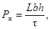
где L - длина блока, м; b - ширина блока, м; h - толщина слоев бетонной смеси в уплотненном состоянии, м; t - предельно допустимое время перекрытия слоев, ч (табл. 10).
8.7. Укладка бетонной смеси по ступенчатой схеме применяется для возведения массивных неармированных и малоармированных сооружений длинными блоками, в том числе при секционной разрезке арочных и арочно-гравитационных плотин на блоки бетонирования.
Разравнивание и уплотнение бетонной смеси при этом, как правило, выполняются совмещенно пакетами вибраторов, навешенных на манипуляторы или краны; ширина уступов при механизированной укладке обычно принимается равной 3 - 5 м, а число одновременно укладываемых слоев - равным 2.
Предельно допустимая наименьшая интенсивность бетонирования (Рн) при этой схеме должна определяться по зависимости
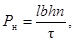
где l - ширина ступени, м; n - число слоев бетонной смеси в блоке.
8.8. Укладка бетонной смеси однослойными блоками применяется, как правило, при возведении массивных неармированных и мало армированных сооружений блоками большой площади, в том числе при секционной разрезке гравитационных и контрфорсных плотин на блоки бетонирования.
Разравнивание и уплотнение бетонной смеси при этом, как правило, выполняются раздельно: разравнивание смеси ведется бульдозерами, а ее уплотнение - пакетами вибраторов, навешенных на электротракторы или манипуляторы.
При применении укатанного бетона уплотнение бетонной смеси производится катками, виброкатками или тяжелыми гружеными автомашинами с удельным давлением не менее 0,5 МПа.
Предельно допускаемая наименьшая интенсивность бетонирования (Рн) при этой схеме должна определяться по зависимости
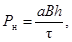
где a - ширина защитно-пригрузочной полосы (для вибрированного бетона 2 - 4 м, для укатанного бетона 2 - 3 м); b - размер стороны блока, вдоль которой ведется укладка бетонной смеси, м; h - толщина слоя, равная высоте блока, м.
8.9. При всех схемах укладки бетонной смеси
средняя расчетная интенсивность ее подачи к бетонируемому блоку ( 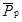
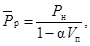
где Рн - предельно допускаемая наименьшая интенсивность бетонирования блока по принятой схеме, определенная по формулам (1) - (3), м3/ч; a - коэффициент, зависящий от требуемой обеспеченности непрерывности процесса бетонирования; Vп - коэффициент вариации (изменчивости) интенсивности потока бетонной смеси, поступающей к блоку.
Средняя расчетная интенсивность потока бетонной смеси должна с заданной обеспеченностью гарантировать непрерывность и устойчивость процесса укладки смеси, сводя к минимуму вероятность вынужденной консервации блоков бетонирования. Для ее вычисления следует принимать значения a и Vп, приведенные в табл. 11.
Таблица 11
|
Требуемая обеспеченность непрерывности бетонирования блоков, % |
Значение a |
Рекомендуемые значения Vп при числе одновременно бетонируемых блоков |
||
|
< 2 |
> 3 |
|||
|
I |
97 |
2,0 |
0,15 |
0,20 |
|
II |
95 |
1,64 |
0,15 |
0,20 |
|
III - IV |
90 |
1,28 |
0,20 |
0,25 |
8.10. Изменение фактической производительности механизмов, занятых на подаче, разравнивании и уплотнении бетонной смеси в зависимости от применяемого способа укладки следует учитывать, вводя поправочный коэффициент Kс к производительности каждого механизма. Значения Kс принимаются по табл. 12 в соответствии с условиями бетонирования.
8.11. Толщина укладываемых слоев должна согласовываться с типом уплотняющего оборудования. Технические характеристики вибраторов приведены в приложении 2.
8.12. Во избежание оплывания откосов укладываемой смеси и образования трещин при ее сползании уплотнение смеси вибраторами в каждом слое следует производить не ближе 1,0 - 1,5 м от края откоса слоя.
Таблица 12
|
Рекомендуемые значения Kс в зависимости от числа марок бетона в блоке |
|||
|
при одной марке |
при двух марках (в соответствии с зональным распределением бетона) |
при трех марках (в соответствии с зональным распределением бетона) |
|
|
Последовательными горизонтальными слоями |
0,90 |
0,70 |
0,50 |
|
По ступенчатой схеме бетонирования |
0,80 |
0,75 |
0,70 |
|
По схеме однослойного бетонирования |
1 |
1 |
1 |
8.13. При наклонной поверхности основания бетонируемого блока укладку смеси следует начинать во всех случаях с пониженной части блока.
8.14. Положение поверхности укладываемых слоев бетонной смеси и соответствие их принятой толщине следует проверять по заранее нанесенным на опалубке отметкам. При этом следует учитывать, что высота слоя малоподвижной бетонной смеси до разравнивания должна составлять (из-за осадки при уплотнении) 1,05 - 1,10 высоты уплотненного слоя.
8.15. При укладке бетонной смеси необходимо следить, чтобы выше расположенная опалубка и арматура не загрязнялись бетоном и систематически от него очищались.
8.16. В процессе бетонирования блока поверхность уплотненной бетонной смеси необходимо защищать синтетическими пленками, брезентом или другими материалами от попадания дождевой воды и действия солнечной радиации. Размытый бетон должен быть удален.
Допускаются транспортирование и укладка бетонной смеси при моросящем дожде (интенсивность осадков не более 0,08 мм/мин); при этом поверхность уложенной бетонной смеси может оставаться открытой не более 0,5 ч.
8.17. Бетонная смесь может укладываться непосредственно на подготовленную поверхность ранее уложенного бетонного блока без подстилающего слоя пластичной бетонной смеси или раствора при условии, что она уплотняется механизированным способом с применением пакетов мощных глубинных вибраторов типа ИВ-34, ИВ-90, В1-697, а ее подвижность составляет не менее 1 см по осадке стандартного конуса.
8.18. В железобетонных конструкциях (табл. 1) бетонные смеси, укладываемые на скальное (грунтовое) основание или поверхность ранее уложенного бетона, должны иметь подвижность по осадке стандартного конуса не менее 6 см.
Укладка и уплотнение бетонной смеси с применением ручных вибраторов
8.19. В случае применения ручных вибраторов для уплотнения бетонной смеси при ее укладке на подготовленную бетонную или скальную поверхность бетонная смесь первого слоя должна иметь осадку стандартного конуса на 2 - 3 см больше указанной в табл. 1 и предельную крупность заполнителя 20 - 40 мм.
8.20. Толщина слоя при ручном вибрировании не должна превышать 0,5 м; при перекрытии слоев вибратор должен заглубляться в ранее уложенный бетон не менее чем на 5 - 10 см.
В стесненных местах блоков массивных сооружений, в которых основной объем бетонной смеси уплотняется пакетами вибраторов, допускается укладка и проработка слоев смеси толщиной до 75 см ручными вибраторами. Шаг перестановки вибраторов при этом не должен превышать 0,5 радиуса его действия.
8.21. Шаг перестановки вибраторов и продолжительность вибрирования зависят от толщины слоя, подвижности смеси, крупности заполнителя, вида применяемого цемента и добавок. Поэтому в каждом случае необходимо уточнять радиус действия вибратора. Для предварительных расчетов ориентировочная производительность вибраторов разных типов указана в приложении 2.
8.22. Продолжительность вибрирования должна уточняться строительной лабораторией непосредственно на месте работ по визуальным признакам, характеризуемым прекращением осадки смеси и выделения воздушных пузырьков на поверхности. Не допускается расслоение смеси, т.е. скопление растворной ее составляющей на поверхности и у вибратора.
При обнаружении признаков расслоения время вибрирования должно быть сокращено, а состав бетона проверен на расслаиваемость.
8.23. При уплотнении бетонной смеси ручной вибратор следует погружать вертикально или под углом 20 - 30° к вертикали в предварительно разравненную смесь и выдерживать в погруженном состоянии в течение 15 - 30 с. Извлекать вибратор следует медленно, со скоростью 2 - 4 м/мин.
Разравнивание бетонной смеси ручным вибратором не должно приводить к ее расслоению.
8.24. При уплотнении смеси у вертикальных стенок вибратор должен располагаться так, чтобы его ось лежала в вертикальной плоскости, параллельной поверхности стенки, к которой примыкает уплотняемая смесь. Расстояние между корпусом вибратора и поверхностью примыкания должно быть около 8 - 10 см.
8.25. В тех случаях, когда при погружении вибратора в смесь корпус касается скального основания, затвердевшего бетона или закладных частей, работа в контакте с препятствием более 1 - 2 с не допускается.
Укладка и уплотнение бетонной смеси с помощью малогабаритных электрических тракторов
8.26. Разравнивание бетонной смеси с применением электрических тракторов с бульдозерным отвалом следует производить в тех случаях, когда в бетонируемый блок подается смесь порциями объемом 4 - 6 м3.
8.27. Скорость бульдозера при разравнивании бетонной смеси следует выдерживать в пределах: передвижения трактора 20 - 25 м/мин, а подъема-опускания бульдозерного отвала 7 - 10 м/мин.
При разравнивании смеси у свободного откоса слоя следует впереди отвала оставлять валик шириной около 50 см, который уменьшает возможность скатывания крупного заполнителя по откосу на ранее уложенный бетон.
8.28. Уплотнение бетонной смеси с помощью тракторов рекомендуется производить методом непрерывного протягивания вибраторов в слое смеси со средней скоростью 0,75 - 1,25 м/мин. В тех случаях, когда это невозможно, следует применять шаговую перестановку вибраторов.
При уплотнении смеси способом протягивания следует применять однорядные пакеты вибраторов.
При протягивании пакета наклонных вибраторов нижняя точка их должна перемещаться в 2 ÷ 5 см от основания слоя.
Толщину прорабатываемого слоя смеси следует принимать в соответствии с данными приложения 2.
Укладка и уплотнение смеси с применением манипуляторов и кранов
8.29. При уплотнении смеси подвесными пакетами вибраторов могут использоваться манипуляторы и кран-балки или иные краны, предназначенные для обслуживания внутриблочных работ, со скоростью подъема пакетов, не превышающей 4 м/мин.
8.30. На манипуляторы, кран-балки или иные краны подвешиваются пакеты двух типов:
а) осесимметричные,
б) одно- и двухрядные.
Количество вибраторов в пакете назначается исходя из заданной интенсивности бетонирования с учетом объема конусов смеси, которые образуют подаваемые в блоки порции бетонной смеси (4 - 8 м3); масса пакета в сборе не должна превышать 60 - 65 % полной грузоподъемности крана.
8.31. Осесимметричные пакеты следует применять в тех случаях, когда ими ведется и разравнивание, и уплотнение смеси. При интенсивности подачи бетонной смеси в блок более 80 м3/ч рекомендуется предусматривать специальное оборудование для разравнивания смеси с последующим ее уплотнением пакетом вибраторов.
8.32. Разравнивание смеси с применением пакетов вибраторов и уплотнение разравненной смеси осуществляется цикличной перестановкой вибраторов. Уплотнение предварительно разравненной бетонной смеси методом протягивания в ней однорядных пакетов вибраторов возможно при применении манипуляторов, имеющих для подвески пакетов жесткие траверсы и выдвижение стрелы, или кран-балок.
Таблица 13
|
Производительность ручных вибраторов, м3/ч, при уплотнении бетонных смесей с характеристиками |
||||
|
Dнаиб = 40 мм |
Dнаиб = 80 мм |
|||
|
ОК = 1 ÷ 3 см |
ОК = 3 ÷ 5 см |
ОК = 1 ÷ 3 см |
ОК = 3 ÷ 5 см |
|
|
ИВ-59, ИВ-102 |
4 - 5 |
5 - 7 |
- |
- |
|
ИВ-60, ИВ-80 |
6 - 8 |
8 - 10 |
5 - 7 |
7 - 9 |
Примечание. Dнаиб - предельная крупность зерен заполнителя бетонной смеси.
Таблица 14
|
Пакеты вибраторов |
Число вибраторов в пакете |
Производительность, м"/ч, при толщине слоя, см |
|||
|
50 |
75 |
100 |
150 |
||
|
ИВ-34 |
4 |
30 - 40 |
50 - 60 |
- |
- |
|
ИВ-90 |
4 |
30 - 40 |
50 - 80 |
90 - 100 |
- |
|
В-1-697 |
3 |
- |
60 - 70 |
80 - 90 |
110 |
8.33. Продолжительность цикла уплотнения бетонной смеси обусловливается принятым вибрационным оборудованием, составом и подвижностью смеси и должна устанавливаться непосредственно в производственных условиях. В качестве ориентировочных данных для определения необходимого числа вибромеханизмов могут приниматься производительности (с учетом разравнивания и уплотнения) в соответствии с табл. 13, 14.
Укладка и уплотнение бетонной смеси в железобетонных конструкциях
8.34. Уплотнение бетонной смеси в железобетонных конструкциях, основные типы которых приведены в табл. 15, должно по возможности производиться механизированными способами с применением вибрационного оборудования, подвешиваемого к кранам.
Таблица 15
|
Тип армирования |
Схема армирования |
|
|
Плиты |
I-A. Армопакеты или армосетки, поддерживаемые стойками (фундаментные плиты, понуры, водобойные колодцы, рисбермы и др.) |
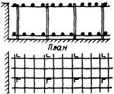 |
|
I-Б. Армопакеты или армосетки, поддерживаемые армофермами (плиты водосливной плотины, днища шлюзов и др.) |
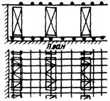 |
|
|
Стенки (бычки) |
II-А. Вертикальные армофермы, объединенные в пространственные конструкции (подпорные стенки, стенки шлюзов, бычки отсасывающих труб, водосливных плотин и др.) |
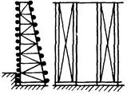 |
|
II-Б. Армоплиты или армопанели (оболочки), включающие в себя основную рабочую арматуру (бычки и полубычки ГЭС, плотин и др.) |
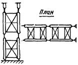 |
8.35. В качестве основного вибрационного оборудования для уплотнения смеси в железобетонных конструкциях рекомендуются: серийно выпускаемые подвесные вибраторы ИВ-34, ИВ-90 и В-1-697, а также пакеты из серийно выпускаемых подвесных или ручных вибраторов.
8.36. Подвесные вибраторы, объединенные в пакеты, могут применяться при условии, что возможно их введение в арматурную конструкцию. Учитывая сложность попадания вибраторов в ячейки арматурной сетки, количество их в пакете не должно быть более 4, а шаг их соразмерен шагу арматуры.
8.37. Требования к размещению арматуры и выбору уплотняющего оборудования в зависимости от типа сооружения и способа виброуплотнения приведены в табл. 16. Указанные рекомендации следует учитывать при составлении проекта производства работ в зависимости от конструкции армокаркасов.
Таблица 16
|
Рекомендуемый виброуплотнитель |
Требования к размещению арматуры |
|
|
I-A |
Вибропакет из тяжелых вибраторов ИВ-34, ИВ-90 Вибропакет из 4 ручных вибраторов ИВ-60, ИВ-102 |
Требования к размещению арматуры не предъявляются. Расстояния между вибраторами в пакете согласуются с модулем ячеек арматуры |
|
II-А I-Б |
Однорядный вибропакет из тяжелых вибраторов ИВ-34, ИВ-90 |
Пространственные армофермы шириной не более 1,5 м. Расстояние между армофермами должно быть не менее 0,5 м |
|
II-Б |
Однорядный вибропакет из тяжелых вибраторов ИВ-34, ИВ-90 Плоскостные виброуплотнители ПВ-2 |
Монтажная арматура (стержни) должна образовывать колодцы для пропуска уплотнителя или однорядного вибропакета с шагом по длине стены не более 1,5 м |
8.38. С учетом большого динамического воздействия бетонной смеси на опалубку не следует приближать к ней тяжелые вибраторы кругового действия ближе 0,5 м. Во всех случаях запрещается выключать и включать погруженные в бетонную смесь вибраторы около опалубки.
Особые случаи укладки и уплотнения бетонной смеси
8.39. В отдельных случаях при технико-экономическом обосновании в неармированные и слабо армированные массивные сооружения допускается укладка камнебетона в соответствии со специальной Инструкцией, разработанной генпроектировщиком для данного строительства.
8.40. Инструкция должна содержать требования к составу бетона, качеству и количеству камня, технологии его подачи и укладки, режиму работы вибрационного оборудования.
8.41. В отдельных случаях в неармированные массивные сооружения III - IV класса допускается втапливание крупных камней - «изюма». В качестве «изюма» могут быть использованы обломки скалы, валуны и камни размерами 150 - 400 мм, удовлетворяющие требованиям по чистоте, прочности и плотности к крупному заполнителю для бетона гидротехнических сооружений, установленных ГОСТ 10268-80.
Распределение «изюма» в бетонируемом блоке производится с помощью крана и вручную. Общее количество «изюма» в бетонируемых блоках не должно превышать 15 %.
8.42. Укладка бетонной смеси с применением вакуумирования должна выполняться в соответствии с Инструкцией, разрабатываемой проектной организацией, при этом следует предусматривать использование переносных вакуум-щитов, укладываемых на открытой горизонтальной поверхности бетона, или вакуум-опалубки.
8.43. Особенно большое внимание должно уделяться уплотнению износостойкого бетона. Степень уплотнения его должна быть не ниже 0,98. Для окончательной отделки износостойкого бетона рекомендуется применение виброреек, обеспечивающих заглаживание поверхности бетона.
8.44. Уплотнение бетона, укладываемого в плиты крепления откосов, должно производиться скользящими виброштампами по Инструкциям, разработанным применительно к местным условиям строительной организацией и согласованной с проектной организацией. Допускается уплотнение смеси виброрейками.
8.45. Скользящий виброштамп, представляющий собой мощный поверхностный вибратор в виде прицепного устройства к трактору или другому тяговому механизму, уплотняет смесь сразу на всю толщину слоя при движении снизу вверх, что обеспечивается правильным выбором параметров его работы.
Скорость перемещения скользящих виброштампов необходимо иметь в пределах 0,8 - 2 м/мин, а удельное давление на бетон 60 - 70 гс/см2.
8.46. При бетонировании откосов допускается применение бульдозеров. Разравнивание смеси производится снизу вверх. Применение бульдозеров разрешается на откосах не круче 1:2,5 при толщине плит не менее 20 см.
9.1. При производстве бетонных работ обязателен комплекс мер по уходу за уложенным бетоном, обеспечивающий:
а) создание и поддержание температурно-влажностного режима, необходимого для приобретения бетоном требуемых проектом прочности и долговечности в установленные сроки, а также предотвращающего значительные температурно-усадочные деформации и образование опасных трещин;
б) предохранение бетона в начальный период его твердения от ударов, сотрясений и повреждений в ходе строительно-монтажных работ.
9.2. Мероприятия по уходу за бетоном, порядок и сроки их проведения, последовательность и сроки распалубки конструкций должны устанавливаться проектом производства работ.
Для массивных гидротехнических сооружений необходимые мероприятия по уходу за бетоном должны определяться проектом с учетом требований по регулированию температурного режима массивных сооружений, приведенных в гл. 10 настоящих правил, а также в СНиП II-54-77 и II-56-77.
9.3. Влажностный уход за свежеуложенным бетоном в летнее время заключается в поддержании открытых поверхностей в постоянно влажном состоянии путем распыления над ними воды, создания на них тонкой водяной пленки, заливки их водой или укрытия песком (или иным влагоемким материалом), систематически увлажняемым в процессе твердения бетона.
9.4. Сроки и способы влажностного ухода за бетоном в летнее время зависят от местных климатических условий, применяемых цементов, составов и назначения бетона, добавок поверхностно-активных веществ, добавок, регулирующих сроки схватывания цементов и бетонных смесей, и должны устанавливаться проектом.
Как правило, уход за свежеуложенным бетоном гидротехнических конструкций следует начинать сразу же по достижении бетоном прочности 0,6 МПа и продолжать не менее 14 сут либо до перекрытия блока блоком.
Влажностный уход за кавитационностойким, износостойким бетоном и бетоном, к которому предъявляются требования высокой морозостойкости (Мрз 200 и выше) должен продолжаться не менее 28 сут.
9.5. При бетонировании в жаркую и сухую погоду открытая поверхность свежеуложенной бетонной смеси сразу же после ее укладки и уплотнения в незащищенных шатром массивных блоках и конструкциях типа плит должна укрываться паронепроницаемой (полиэтиленовой) светлой пленкой 0,15 - 0,20 мм и находится под нею в течение 6 ÷ 8 ч, после чего может быть начат систематический влажностный уход за бетоном посредством полива водой и др.
В жаркую и сухую погоду на период ухода за бетоном должна также постоянно находиться во влажном состоянии неснятая деревянная опалубка.
9.6. В отдельных случаях при специальном обосновании в проекте производства работ уход за бетоном может осуществляться посредством покрытия наружных поверхностей сооружений или конструкций специальными пленкообразующими составами. Пленкообразующие эмульсии следует наносить через 2 - 3 ч после укладки бетона с помощью краскопультов или пневматических пистолетов-разбрызгивателей. При этом в районах с жарким и сухим климатом следует применять пленкообразующие составы светлых тонов, отражающие солнечные лучи.
9.7. В осеннее и весеннее время года, когда среднесуточная температура наружного воздуха составляет около 5 °С и возможны заморозки, влажностный уход за бетоном следует заменять укрытием паро- или гидроизоляционными материалами (полиэтиленовая пленка, толь и т.п.); при необходимости поверх них устраивается теплоизоляционный слой.
9.8. В зимнее время уход за бетоном осуществляется в соответствии с указаниями главы 11.
9.9. С целью предохранения свежеуложенного бетона от повреждений необходимо соблюдать следующие условия:
а) работы на поверхности уложенного блока по уходу и по удалению цементной пленки до набора бетоном прочности при сжатии 1,5 МПа должны выполняться с применением дощатых настилов;
б) механизированное удаление цементной пленки следует начинать только после набора бетоном прочности при сжатии не менее 1,6 МПа;
в) установку и перестановку опалубки производить, как правило, после достижения бетоном прочности при сжатии 2,5 МПа;
г) перемещение по поверхности свежеуложенного бетона транспортных средств (бетоновозов и т.п.) и механического оборудования допускается только после набора бетоном прочности при сжатии не менее 2,5 МПа;
д) при производстве вблизи забетонированных конструкций взрывных работ паспорт буровзрывных работ должен быть согласован с генпроектировщиком.
9.10. Сроки распалубки блоков устанавливаются в проекте в зависимости от требований к их температурному режиму и условий их загружения.
Закрепление конструкции опалубки в свежеуложенный бетон с применением тяжей и анкеров должно производиться при прочности бетона при сжатии не менее 2,5 МПа.
9.11. В случае обнаружения дефектов бетона (раковин, каверн, трещин) причины их появления (неправильно подобранный состав бетонной смеси, нарушения правил ее приготовления, недостаточное уплотнение бетонной смеси, неправильный уход за бетоном и т.д.) должны выясняться и устраняться.
9.12. Обнаруженные в уложенном бетоне дефекты должны исправляться в соответствии с требованиями проекта или указаниями строительной лаборатории (технической инспекции).
9.13. Поверхностные раковины в уложенных блоках должны обязательно расчищаться до здорового бетона. Расчищенные раковины на лицевых поверхностях блока должны быть заполнены либо бетонной смесью той же марки, что и в конструкции, но с крупностью заполнителя до 20 мм, либо заделаны методами торкретирования или набрызг-бетона в соответствии с требованиями проектной организации.
9.14. Бетон, к которому проектом сооружения предъявляются требования водонепроницаемости, при удельном водопоглощении более 0,01 л/мин должен быть подвергнут цементации до поднятия напора воды.
10.1. В проекте производства бетонных работ при возведении монолитных бетонных и железобетонных гидротехнических сооружений должен быть предусмотрен комплекс конструктивных решений и технологических средств и приемов для регулирования температурного состояния бетонной кладки с целью создания благоприятных условий твердения, предотвращения опасного трещинообразования в периоды строительства и эксплуатации, а также температурной подготовки сооружения к омоноличиванию швов, если такое омоноличивание необходимо по условиям статической работы сооружения.
10.2. Требования к температурному режиму устанавливаются на основе расчетов температурных полей и термонапряженного состояния бетонной кладки. Необходимые для расчетов данные по физико-механическим и теплофизическим характеристикам бетонов (тепловыделение, коэффициенты теплопроводности и температуропроводности, удельная объемная теплоемкость, коэффициент линейного расширения, модуль упругости, коэффициент Пуассона, характеристики ползучести, прочность при растяжении или предельная растяжимость) принимаются, как правило, по результатам экспериментальных исследований, выполняемых научно-исследовательскими организациями на образцах бетонов, приготовленных из материалов, намеченных к использованию на данном конкретном строительстве.
На стадии технического проекта допускается пользоваться аналогами с последующей корректировкой расчетных данных в соответствии с фактическими свойствами применяемых бетонов.
10.3. Создание предусмотренных проектом температурного режима и термонапряженного состояния бетонной кладки достигается с помощью комплекса конструктивных решений и технологических средств, осуществляемых при возведении сооружения.
К конструктивным решениям относятся:
а) выбор типа сооружения или конструкции с учетом требований к их трещиностойкости и возможности их выполнения в зависимости от климатических и других местных условий;
б) разрезка сооружения температурно-деформационными, конструктивными и временными строительными швами;
в) рациональное размещение и конструктивное оформление необходимых отверстий и полостей в сооружении;
г) армирование бетона.
К технологическим средствам относятся:
а) регулирование тепловыделения бетона;
б) подогрев и охлаждение бетонной смеси;
в) регулирование температуры уложенного бетона:
г) защита поверхностей бетона от интенсивного охлаждения и нагрева (устройство шатров над бетонируемыми блоками, применение утепленной опалубки, укрытие горизонтальных поверхностей синтетическими пленками и т.д.);
д) варьирование высоты блоков бетонирования и интервалов их перекрытия;
е) соблюдение требований по влажностному уходу за уложенным бетоном;
ж) повышение прочности бетона на растяжение, его однородности и снижение модуля деформации бетона.
10.4. Размеры блоков в плане определяются на основе технико-экономического сопоставления вариантов, в которых конструкция сооружения, схема производства работ, разрезка на блоки бетонирования, интенсивность бетонных работ и комплекс средств регулирования температурного режима и термонапряженного состояния бетонной кладки должны быть взаимно увязаны.
10.5. Высота блоков и интервал их перекрытия назначаются в зависимости от зоны укладки, сезона и времени бетонирования, температурного состояния нижележащих блоков, состава мероприятий температурного регулирования. Высота блоков должна быть кратной толщине слоев бетонирования.
10.6. К бетонной кладке массивных бетонных или армированных гидротехнических сооружений при их возведении предъявляются следующие требования по температурному режиму, которые в каждом конкретном случае уточняются расчетом.
а) В контактной зоне, высота которой от основания составляет до 0,2 наибольшего размера блока в плане, разность между наивысшей температурой бетона во время его разогрева и наинизшей температурой в той же точке после его остывания до эксплуатационных условий должна быть не более 16 - 18 °С при бетонировании длинными блоками и 20 - 27 °С при бетонировании столбчатыми блоками.
В контактной зоне переохлаждение бетона ниже расчетных наинизших температур не допускается.
Разность температур между ядром и боковыми поверхностями массива допускается не более 16 - 18 °С.
Примечания: 1. При расчетах термонапряженного состояния блок считается столбчатым, если его плановые размеры соизмеримы, и длинным, если его плановые размеры таковы, что один размер в 2 раза и более превышает другой, а высота составляет не более 2,0 м.
2. Под основанием подразумевается скала либо ранее уложенный бетонный массив, перекрытие которого смежным по высоте блоком производится после 15 сут.
б) В свободной зоне, удаленной от основания на высоту более 0,5 наибольшего размера блока в плане, величина разности температур между ядром и боковыми поверхностями массива допускается не более 20 - 25 °С.
в) В переходной зоне, расположенной от основания на высоте 0,2 - 0,5 наибольшего размера блока в плане, должен осуществляться плавный переход от допустимых температур и разностей температур в контактной зоне к допустимым температурам и разностям температур в свободной зоне.
г) Во всех зонах разность температур между ядром и горизонтальной поверхностью блока не должна превышать 14 - 16 °С. При этом разность температур 14 °С относится к длинным блокам, а 16 °С - к столбчатым.
д) Во всех зонах разность высот смежных (соседних) столбов в одной секции при столбчатой разрезке и цементируемых швах не должна, как правило, превышать 6 - 9 м.
В тех случаях, когда разность высот превышает 6 - 9 м (создание штрабленого пускового профиля плотины и т.п.), наращивание отстающих столбов должно производиться с регулированием перепада температур между отстающими и опережающими столбами с помощью трубного охлаждения и ограничения темпа их роста в высоту. Величина допустимого температурного перепада устанавливается в каждом конкретном случае в зависимости от плановых размеров столбов, высот блоков, формы штрабных зацеплений и т.д.
10.7. Цементация строительных швов при столбчатой разрезке сооружения на блоки бетонирования производится при расчетных температурах омоноличивания в соответствующих зонах сооружения.
10.8. Регулирование тепловыделения бетонной кладки следует осуществлять как путем уменьшения общего количества тепла экзотермии, выделяющегося при твердении бетона, так и изменением кинетики тепловыделения. Это может достигаться за счет использования специальных цементов (цементы с умеренной и низкой экзотермией), снижения расхода цемента в бетоне, применения пластифицирующих и воздухововлекающих добавок, золы уноса, добавок, замедляющих или ускоряющих твердение бетона и т.п.
10.9. Регулирование температуры бетонной смеси заключается в ее охлаждении в летнее время и подогреве в зимнее время. Снижение температуры бетонной смеси в летнее время может осуществляться за счет:
а) охлаждения воды затворения;
б) замены части воды затворения искусственным льдом;
в) охлаждения крупного заполнителя;
г) охлаждения песка;
д) применения цементов с температурой не выше 40 °С.
Примечания: 1. Выбор того или иного мероприятия или их сочетания при охлаждении бетонной смеси должен производиться на основе технико-экономических расчетов с учетом возможного использования установок охлаждения и для подогрева в зимнее время года; для крупного заполнителя целесообразно использовать обратимые установки воздушного охлаждения - подогрева.
2. Лед, получаемый на льдогенераторных Установках и вводимый в бетонную смесь, должен полностью растаять в процессе ее перемешивания.
10.10. Искусственное охлаждение уложенного бетона может осуществляться двумя способами: поверхностным и внутренним (трубным).
10.11. Поверхностное охлаждение уложенных блоков достигается посредством их полива водой или увлажнения.
Как средство регулирования температурного режима поверхностное охлаждение эффективно для блоков высотой до 1,0 - 1,6 м. При этом для блоков высотой более 1,0 м эффективность поверхностного охлаждения должна устанавливаться в каждом конкретном случае расчетом или проведением опытных работ.
10.12. При поверхностном охлаждении должно обеспечиваться равномерное распределение воды на поверхности бетона с разницей температур не более 3 - 4 °С. Сухие места (пятна на поверхности бетона) не допускаются.
Применение полива или увлажнения зависит от требований по ограничению максимальной температуры бетона, сезона года и климатических условий. Обычно в наиболее жаркие месяцы используется полив, а в остальное теплое время года - увлажнение.
10.13. Полив может осуществляться выпуском воды при малом напоре из специальных перфорированных или оснащенных струйными и дождевальными насадками труб.
Ориентировочный расход воды составляет 5 - 10 л/с на 1000 м2 поверхности блока в условиях затенения шатром и 15 - 20 л/с на незатененных участках.
Для организации стока воды с горизонтальных поверхностей им целесообразно придавать небольшой уклон (порядка 0,3 %) в любом направлении, приемлемом для производства работ. Вода должна отводиться в специальные коллекторы через вертикальные сливные трубы.
10.14. Полив бетона следует начинать через 8 - 12 ч или непосредственно после снятия цементной пленки и осуществлять непрерывно с прекращением за 10 - 12 ч до укладки смежного по высоте блока или по достижении требуемой температуры в блоке. После этого поверхность бетона должна поддерживаться во влажном состоянии вплоть до момента укладки бетона.
10.15. При использовании увлажнения как способа регулирования температуры бетона его поверхность должна быть возможно более полно насыщена водой, и это состояние поверхности должно поддерживаться систематически до перекрытия блока смежным по высоте.
10.16. Увлажнение может осуществляться посредством периодического полива поверхности бетона водой из шлангов с водораспыляющими насадками или другими техническими средствами, не допускающими размыва поверхности бетона.
Ориентировочный расход воды составляет 0,02 - 0,05 л/с на 1000 м2 поверхности блока в условиях затенения шатром и 0,1 - 0,3 л/с на незатененных участках.
10.17. Вода для поверхностного и трубного охлаждения должна удовлетворять ГОСТ 23732-79.
10.18. Трубное охлаждение осуществляется посредством пропуска хладоносителя - охлажденной или речной воды (в отдельных случаях рассола) - через систему заложенных в бетон труб.
10.19. Трубное охлаждение рекомендуется проводить в два этапа.
I этап - охлаждение в период интенсивного экзотермического разогрева бетона с целью снижения максимальной температуры в блоке;
II этап - охлаждение до температур омоноличивания при малом, затухающем тепловыделении бетона.
I и II этапы могут следовать друг за другом с перерывом или без перерыва; длительность перерыва определяется целесообразным режимом охлаждения массива и календарным планом производства цементационных работ.
В отдельных случаях, например при малой высоте блоков и поверхностном их охлаждении, трубное охлаждение на I этапе может не производиться, что должно быть обосновано расчетами.
10.20. Охлаждение на I этапе начинается непосредственно при укладке бетонной смеси и заканчивается через 10 - 20 дней при такой температуре бетона, при которой последующий разогрев не превышает допустимой величины, устанавливаемой расчетом. Разность температур между бетоном и охлаждающей водой на I этапе допускается не более 30 °С.
Допустимый темп охлаждения бетона составляет не более 1 °С/сут в течение первых 8 - 10 сут и 0,5 °С/сут при дальнейшем охлаждении бетона.
10.21. Охлаждение на II этапе осуществляется в течение длительного времени, продолжительность которого устанавливается расчетом или натурными наблюдениями.
На II этапе охлаждения должны соблюдаться следующие ограничения:
а) разность между температурой бетона и средней температурой охлаждающей воды (с учетом нагрева ее в змеевиках) не должна превышать 20 °С, если бетон охлаждался на I этапе;
б) темп охлаждения бетона в контактной зоне не должен превышать 0,5 °С/сут, в свободной зоне темп охлаждения может быть повышен до 1 °С/сут.
10.22. Для соблюдения требований пп. 10.20 и 10.21 допускается использовать воду с разной рабочей температурой, а также применять прерывистый режим трубного охлаждения с периодическим включением и отключением подачи воды.
В ряде случаев оказывается необходимым организовать на строительстве специальное холодильное хозяйство для получения воды с требуемой температурой в нужное время года.
10.23. Горизонтальный и вертикальный шаг труб следует, как правило, назначать от 1,0 до 3,0 м; в каждом конкретном случае шаг труб должен определяться в результате соответствующих расчетов температурного режима и технико-экономического обоснования.
10.24. Скорость движения воды в трубах следует назначать в пределах от 0,5 до 0,9 м/с. Для равномерного охлаждения бетона рекомендуется периодически изменять направление движения воды в трубах либо подключать змеевики таким образом, чтобы обеспечить циркуляцию воды в смежных по высоте змеевиках в противоположных направлениях.
10.25. Трубы-змеевики могут укладываться на основание бетонируемого блока либо в процессе его бетонирования на поверхности укладываемых слоев. Длина змеевика не должна превышать 350 м, оптимальной длиной следует считать 165 - 225 м.
10.26. К трубам-змеевикам, закладываемым в бетоне, охлаждающая вода должна подводиться по трубам-стоякам, подключенным к распределительным гребенкам, которые, в свою очередь, присоединяются к прямому и обратному коллекторам с установкой вентилей. Проверка труб-змеевиков под давлением, равным тому, которое они должны выдерживать в процессе работы, обязательна.
10.27. Змеевики изготовляются, как правило, из стальных газопроводных труб диаметром 3/4 - 1", с толщиной стенок от 1,0 до 3,5 мм. Трубы соединяются резьбовыми муфтами, сваркой или специальными уплотнительными муфтами.
Примечание. При соответствующем технико-экономическом обосновании возможно использование труб из других материалов, например из алюминия, полиэтилена и др.
10.28. Рациональный режим работы системы трубного охлаждения (непрерывная или периодическая подача воды, количество и уровень рабочих температур воды, горизонтальный и вертикальный шаг труб и т.д.) в каждом конкретном случае должен определяться в результате соответствующих расчетов температурного режима и термонапряженного состояния и технико-экономического обоснования.
10.29. Для защиты поверхностей бетонной кладки от воздействия солнечной радиации рекомендуется использовать ограждающие конструкции из легких непроницаемых для инфракрасного излучения материалов (брезент, ткани, непроницаемая пленка и т.д.). Ограждение должно быть удалено от поверхности бетона на 2 - 8 м для предотвращения конвективной передачи тепла от ограждения к бетонной поверхности.
Эффективным средством защиты бетонных поверхностей от воздействия солнечной радиации, особенно при бетонировании блоками с большими плановыми размерами, является устройство над бетонируемой поверхностью шатров.
Общие указания
11.1. Особые требования к производству бетонных работ при отрицательной температуре наружного воздуха или основания предъявляются при наличии одного из следующих условий:
а) среднесуточная температура наружного воздуха ниже 0 °С;
б) минимальная суточная температура наружного воздуха минус 5 °С или ниже;
в) температура основания, подготавливаемого для укладки на него бетона, ниже 0 °С.
11.2. Производство зимних бетонных работ должно вестись так, чтобы при строгом соблюдении заданных проектом требований по сохранению монолитности сооружения обеспечивать получение в заданные сроки бетона с предусмотренной проектом прочностью, водонепроницаемостью и морозостойкостью.
Для выполнения этого необходимо:
а) сохранение положительных температур как бетонной смеси в процессе укладки, так и уложенного бетона;
б) обеспечение надлежащего температурного режима в процессе твердения бетона;
в) ограничение температурного перепада между ядром и поверхностью блока при выдерживании бетона в опалубке и между ядром блока и наружным воздухом при его распалубке;
г) выполнение требований глав 3, 10 и 11 настоящих ВСН.
11.3. Температурный режим твердения бетона должен обеспечить до замораживания не менее 40 % его марочной прочности для марок 200 или выше и не менее 50 % прочности для более низких марок, если в проекте не предусматривается иных требований. Прочность к моменту возможного замораживания гидротехнического бетона всех марок должна быть указана в проекте производства работ.
11.4. Укладку бетонной смеси в зимнее время следует производить либо в открытых блоках - методом «термоса», либо под защитой шатров или в тепляках.
11.5. Бетонирование в открытых блоках методом «термоса» производится:
а) для массивных блоков с модулем опалубливаемой поверхности Мп до 1 при температуре до минус 15 °С;
б) для блоков с Мп от 1 до 3 при температуре до минус 10 °С с дополнительным утеплением углов и ребер блоков или периферийным их электропрогревом;
в) для немассивных конструкций с Мп более 3 при температуре до минус 10 °С - методом активного «термоса» с предварительным электроразогревом бетонной смеси непосредственно перед ее укладкой или с электропрогревом уложенного бетона.
При обосновании теплотехническими расчетами допускается укладка бетонной смеси при температуре до минус 20 °С в следующих случаях:
а) для массивных блоков с Мп до 1 с введением дополнительных мероприятий (снижение времени перекрытия - слоев до 2,5 ч и менее, частичное укрытие слоя свежеуложенного бетона по мере его готовности полиэтиленовой пленкой, крафтбумагой);
б) для блоков с Мп от 1 до 3 при выполнении тех же условий и с обязательным введением воздухововлекающих добавок и дополнительным утеплением углов и ребер блока или периферийным электропрогревом выступающих частей блока.
Во всех случаях по окончании бетонирования требуется теплоизолирующее укрытие горизонтальной поверхности уложенного бетона.
11.6. При температуре ниже минус 10 °С (кроме случаев, указанных в п. 11.5) укладка бетонной смеси в блоки осуществляется, как правило, под защитой шатров или тепляков с поддержанием под ними температуры воздуха не ниже 5 °С:
а) для блоков с Мп до 3 рекомендуется шатер без дополнительного периферийного электропрогрева;
б) для блоков с Мп от 3 до 5 рекомендуется шатер с дополнительным периферийным электропрогревом;
в) для блоков с Мп более 5, если нельзя создать требуемый температурный режим при выдерживании бетона в шатрах с дополнительным электропрогревом, рекомендуется тепляк.
Шатры, используемые для защиты горизонтальных поверхностей блоков на период бетонирования и выдерживания бетона, должны:
а) быть инвентарными, прочными и быстро и легко перемонтируемыми;
б) обеспечивать в шатровом пространстве положительную температуру, обусловленную теплотехническими расчетами (не ниже 3 ÷ 5 °С):
в) иметь все предусмотренные проектом энергетические коммуникации и устройства (электроэнергия, пар, сжатый воздух, вода, отопление, увлажнение воздуха и т.п.);
г) позволять производить либо порционную, либо непрерывную подачу бетонной смеси в бетонируемые блоки, а также при необходимости подачу арматуры, опалубки и других грузов.
Тепляк представляет собой временное устройство, под защитой которого в зимнее время производится бетонирование конструкции или части сооружения с Мп более 5.
11.7. Перед переходом на зимний режим работы необходимо:
а) заблаговременно составить проект производства бетонных работ на зимний период с обосновывающими его расчетами теплового баланса бетонируемых блоков и подсчетами потребности в энергии, паре, топливе, теплоизоляционных материалах и др.;
б) обеспечить готовность котельных, паропроводов, калориферов, устройств для подогрева материалов, утепления и отопления бетонных заводов, средств утепления блоков, помещений для обогрева рабочих.
11.8. При производстве бетонных работ в зимнее время должны особо тщательно соблюдаться «Правила пожарной безопасности при производстве строительно-монтажных работ» и требования СНиП III-4-80.
Приготовление и транспортирование бетонной смеси
11.9. Как правило, в зимнее время следует приготовлять бетонную смесь заданных марок тех же составов, что и в летнее время с применением поверхностно-активных добавок, дозировка которых уточняется лабораторией строительства. При этом для приготовления бетона следует использовать цемент, активность которого не должна быть ниже номинальной марочной.
11.10. Температура бетонной смеси при выпуске ее с бетонного завода устанавливается с учетом потерь тепла ею при транспортировке и укладке в зависимости от условий строительства. Ориентировочные минимальные значения температур бетонной смеси при выпуске ее с бетонного завода в зависимости от температур наружного воздуха рекомендуется для укладки в открытых массивных блоках назначать в соответствии с табл. 17.
Таблица 17
|
наружного воздуха |
бетонной смеси при выпуске с бетонного завода |
|
0 |
6 - 7 |
|
-5 |
6 - 8 |
|
-10 |
7 - 9 |
|
-15 |
8 - 10 |
|
-20 |
9 - 11 |
|
-25 |
10 - 12 |
|
-30 |
11 - 13 |
|
-35 |
12 - 14 |
|
-40 |
14 - 16 |
|
-45 |
16 - 18 |
11.11. Бетонная смесь при подаче ее в блоки, бетонируемые под защитой шатров или тепляков, должна иметь при укладке температуру не ниже 5 °С.
11.12. Приготовление бетонной смеси должно производиться на заполнителях, не содержащих льда, снега и мерзлых комьев.
11.13. Температура бетонной смеси при выпуске с бетонного завода регулируется подогревом ее составляющих. По мере понижения температуры наружного воздуха (до минус 5 °С) производится подогрев воды, при дальнейшем снижении температуры наружного воздуха - песка и крупного заполнителя фракций 5 - 10 и 10 - 20 мм, если это необходимо по тепловому балансу.
Необходимость подогрева более крупных фракций заполнителя определяется тепловым балансом составляющих смеси и требованиями к ее температуре на выходе из бетоносмесителя.
Максимальная температура подогрева не должна превышать: воды 85 °С, песка 60 °С и крупных заполнителей 50 °С.
11.14. Подогрев воды производится в котельных или паровых и электробойлерных установках.
Предварительный отогрев заполнителей на складах для обеспечения их сыпучести осуществляется, как правило, с помощью паровых регистров. Окончательный подогрев песка осуществляется с помощью сушильных барабанов (использующих топочные газы, при условии полного сгорания топлива) и пневматических труб-сушилок, а крупного заполнителя - с помощью воздушных установок.
11.15. При транспортировании бетонной смеси должны быть приняты меры по предохранению ее от переохлаждения:
а) погрузка, транспортирование и разгрузка бетонной смеси должны производиться без задержек;
б) при транспортировании бетонной смеси автосамосвалами кузова их должны обогреваться выхлопными газами, а также укрываться утепленными крышками системы Братскгэсстроя или Главмосстроя;
в) при подаче бетонной смеси в блоки непрерывно-поточным способом весь тракт от бетонного завода до блока бетонирования должен быть надлежащим образом отеплен, а температура по всей его длине должна поддерживаться около 5 °С;
г) при подаче бетонной смеси бетононасосами помещения для них должны отапливаться, бетоноводы на всем своем протяжении должны быть утеплены, а перед началом работы отогреты горячим воздухом или острым паром:
д) бадьи, бункеры, хоботы и другое оборудование, находящееся на открытом воздухе, должно в необходимых случаях утепляться и периодически отогреваться горячим воздухом от калориферов или другими способами не реже одного раза в смену;
е) кузовы автосамосвалов, бадьи, бункеры, хоботы - все средства, используемые для транспортирования и подачи бетонной смеси в блоки должны систематически очищаться от схватившегося и мерзлого бетона.
Подготовка блоков к бетонированию и укладка бетонной смеси
11.16. Подготовку к бетонированию разрешается производить в открытых блоках до температуры минус 10 °С и только в отдельных случаях при выполнении условий, оговоренных в п.п. 11.5, 11.18 ВСН, - до минус 20 °С. При температуре ниже минус 20 °С подготовительные работы должны производиться, как правило, в шатрах или в тепляках.
(Поправка).
11.17. В дополнение к применяемым в летнее время мероприятиям по подготовке блоков к бетонированию необходимо удалять наледь с поверхности основания и ранее уложенного бетона, а также с опалубки, арматуры и закладных частей и отогревать до положительных температур основание, боковые поверхности, арматуру и закладные части.
Отогревание основания и боковых поверхностей до положительных температур должно осуществляться на глубину не менее 300 мм; режим и средства для отогревания уточняются в каждом отдельном случае лабораторией строительства.
11.18. Для блоков с Мп менее 3 допускается укладка бетонной смеси без специального отогрева основания, имеющего отрицательную температуру, при выполнении следующих условий:
а) поверхность основания должна быть очищена от снега, наледей, мусора и т.п. и продута горячим воздухом или паром;
б) в первый (прокладочный) слой толщиной 0,5 - 0,75 м должна быть уложена бетонная смесь, содержащая воздухововлекающую добавку и добавку - ускоритель твердения; температура бетонной смеси этого слоя должна составлять при укладке 10 ÷ 15 °С:
в) опалубка, примыкающая к прокладочному слою и неотогретому основанию, должна иметь коэффициент теплопередачи не более 0,60 кВт/(м2 · К), или 0,50 ккал/(м2 · ч · град).
г) в остальной объем блока (кроме прокладочного слоя) должна быть уложена бетонная смесь без добавки - ускорителя, твердения - с температурой 5 ÷ 10 °С.
Состав бетонной смеси, укладываемой как в прокладочный слой, так и в основной объем блока, должен быть подобран для предусмотренной проектом марки бетона бетонируемого блока.
В качестве добавки-ускорителя может быть применена добавка хлористого кальция в количестве 1,5 ÷ 2,0 % от массы цемента; в качестве воздухововлекающей добавки может быть применена добавка СНВ (0,02 - 0,03 % от массы цемента) или СДБ + CHB (при дозировке соответственно 0,2 + 0,02 % от массы цемента), а также ЛХД (0,1 - 0,2 % от массы цемента) или СДБ + ЛХД (при дозировке соответственно 0,2 + 0,1 % от массы цемента).
Необходимая толщина прокладочного слоя бетонной смеси устанавливается теплотехническим расчетом.
11.19. Отогрев основания и боковых поверхностей разрешается производить с помощью установленных в шатре или тепляке калориферов, а также с помощью форсунок с отражателями или грелок в соответствии с действующими инструкциями. При этом температура теплоносителя не должна превышать 90 °С.
11.20. Все работы по утеплению опалубки и подготовке к активной теплозащите бетона должны быть выполнены до начала бетонирования блока.
11.21. Начало бетонирования блока разрешается только после приемки его комиссией, которая проверяет подготовку его к бетонированию в соответствии с требованиями пп. 7.1 - 7.12 и дополнительно - подготовку тепловых средств для бетона при его укладке и уходе за ним.
11.22. Температура бетонной смеси при бетонировании защищенных шатрами массивных блоков с отогретым в соответствии с п. 11.17 основанием в первом уложенном слое должна быть не ниже 5 °С по всей глубине, а в остальных - не ниже 2 °С.
11.23. Предельный срок перекрытия слоев укладываемой бетонной смеси устанавливается строительной лабораторией в зависимости от местных конкретных условий и указаний главы 8 настоящих ВСН.
11.24. После окончания бетонирования блока под защитой шатра в нем должна поддерживаться положительная температура порядка 5 °С до удаления поверхностной цементной пленки, после чего шатер может не отапливаться, а поверхность бетона должна быть утеплена. Термическое сопротивление утепляющего слоя должно быть не менее, чем у утепленной опалубки. Утепление открытых поверхностей должно быть устроено таким образом, чтобы была исключена возможность загрязнения уложенного бетона.
Уход за бетоном
11.25. Мероприятия по уходу за бетоном в зимнее время, включая его теплозащиту, должны быть определены заранее, до начала производства работ.
11.26. Выбор коэффициента теплопередачи утепленной опалубки для каждого строительства определяется теплотехническими расчетами и ориентировочно производится по табл. 18 в зависимости от температур наружного воздуха района строительства, устойчивых в течение декады, следующей за укладкой бетона.
Таблица 18
|
Требуемый коэффициент теплопередачи опалубки |
||
|
кВт/(м3 · К) |
ккал/(м3 · ч · град) |
|
|
-10 |
1,40 |
1,20 |
|
-25 |
0,85 |
0,75 |
|
-35 |
0,70 |
0,60 |
|
-40 |
0,60 |
0,50 |
11.27. Переход с летней опалубки на зимнюю производится в соответствии с указаниями проекта и технической инспекции строительства и должен осуществляться заблаговременно до наступления заморозков.
11.28. Поверхности бетона, остающиеся в летней опалубке на зимний период, должны дополнительно утепляться с доведением коэффициента теплопередачи до принятого для зимней опалубки.
11.29. При применении в зимнее время армоплит, железобетонных плит или сборных бетонных блоков в качестве опалубки они должны быть утеплены с доведением коэффициента теплопередачи до расчетного.
11.30. Для соблюдения ограничений по п. 10.6 в период выдерживания бетона необходима теплоизоляция горизонтальных и вертикальных, поверхностей блоков, напорной и низовой граней плотин. При этом коэффициент теплопередачи теплоизоляции устанавливается расчетом.
11.31. В суровых и особо суровых климатических условиях на время строительства следует использовать постоянную теплоизоляцию для наружных поверхностей сооружения; целесообразность применения такой теплоизоляции указывается в проекте.
11.32. В массивных бетонных сооружениях при столбчатой разрезке на блоки бетонирования либо не следует допускать замерзание бетона околошовных зон до омоноличивания цементируемых строительных швов, либо должны быть предусмотрены меры по обогреву бетона, примыкающего к шву, или цементация швов раствором с противоморозными добавками.
11.33. Для соблюдения требований п. 10.6 настоящих Правил должны быть предусмотрены также следующие мероприятия:
а) при бетонировании блоков, расположенных на скале или мягком основании, их следует утеплять с наружной стороны по контуру шлаком или другими материалами толщиной до 0,5 м и шириной до 1 м. В случае невозможности утепления внешнего контура применяется прогрев нижних частей блоков;
б) открытые элементы закладных частей и арматура диаметром более 45 мм, выступающие из блока не более чем на 1 м, должны быть тщательно утеплены; входы в галереи и потерны оборудуются диафрагмами из утепленных щитов, снабженных тамбурами с дверьми или люками. Если металлоконструкции и арматура выступают из бетонируемого блока более чем на 1 м, то их следует заключать в обогреваемое пространство;
в) для усиления теплозащиты легко промерзающих верхних и боковых ребер блока (на ширину 1 м от ребра) коэффициент теплопередачи их опалубки должен быть в 1,5 раза меньше коэффициента теплопередачи, принятого для зимней опалубки; в ребрах блока возможно устройство периферийного электропрогрева;
г) коэффициент теплопередачи конструкций шатра или тепляка, не прилегающих непосредственно к укладываемому бетону, должен быть во всех случаях не более 2,3 кВт/(м2 · К), или 2,0 ккал/(м2 · ч · град);
д) температура воздуха в шатре или тепляке при бетонировании и во время выдерживания бетона должна поддерживаться около 5 °С на уровне 0,5 м от основания;
е) в зимнее время распалубка бетона массивных сооружений производится только на тех поверхностях, в примыкании к которым должен укладываться бетон; при этом распалубка указанных поверхностей должна производиться, как правило, в отапливаемых шатрах или тепляках при достижении бетоном прочности при сжатии не менее 2,5 МПа. При распалубке поверхностей в зимнее время вне шатра время раскрытия бетона не должно превышать указанного в табл. 19.
Таблица 19
|
Возраст блока, мес |
Допустимое время раскрытия бетона (ч) в зависимости от температуры наружного воздуха, °С |
|||
|
0 |
минус 10 |
минус 20 |
минус 30 |
|
|
Менее 1 |
8 |
5 |
3,5 |
3 |
|
1 - 2 |
10 |
6 |
4 |
3,5 |
|
2 - 3 |
15 |
8 |
5 |
4 |
|
Более 3 |
24 |
12 |
6,5 |
5 |
11.34. Распалубливание (или снятие утепления) бетонных поверхностей можно производить в тех случаях, когда тепло-техническими расчетами или натурными наблюдениями подтверждается возможность соблюдения перепадов температур в соответствии с п. 10.6 настоящих ВСН.
Общие указания
12.1. Контроль качества бетонных работ заключается в систематической проверке и наблюдении за выполнением требований проекта, настоящих ВСН и действующих СНиП III-45-76 и ГОСТ на материалы.
12.2. Контроль качества бетонных работ со стороны строительной организации осуществляется строительной лабораторией и технической инспекцией, а со стороны проектной организации - группой авторского надзора.
12.3. При производстве бетонных работ должны систематически контролироваться:
а) качество исходных материалов для бетона, технология их подготовки и подачи на бетонный завод;
б) точность дозирования составляющих при приготовлении бетонной смеси, длительность ее перемешивания, качество и температура бетонной смеси;
в) способы и средства транспортирования бетонной смеси и изменение характеристик смеси за время транспортирования;
г) подготовленность блоков бетонирования и бетоноукладочных средств к приемке бетонной смеси;
д) соблюдение правил подачи и укладки бетонной смеси с проверкой качества ее уплотнения;
е) выполнение необходимых мер по уходу за уложенным бетоном и регулированию температурного режима возводимых конструкций;
ж) качество уложенного бетона путем изготовления и испытания контрольных образцов, выбуривания кернов и их испытания, а также испытания пробуренных в бетоне скважин на водопоглощение;
з) наличие дефектов в уложенном бетоне и выполнение предписанных мер по их устранению.
12.4. На строительстве должно быть обеспечено систематическое получение ежедневных метеорологических сведений и краткосрочных прогнозов по температуре воздуха, скорости и направлению ветра и осадкам.
12.5. Контроль производства специальных бетонных работ (подводное и раздельное бетонирование, торкретирование и др.) должен выполняться в соответствии с требованиями специальных инструкций.
12.6. Организация контроля качества бетонных работ и распределение обязанностей между строительной лабораторией, технической инспекцией и авторским надзором регламентируются действующими положениями о технической инспекции, построечных лабораториях и авторском надзоре на строительствах Минэнерго СССР, утвержденными в установленном порядке.
Контроль качества материалов и их хранения
12.7. Используемые для бетона гидротехнических сооружений цементы должны соответствовать требованиям специальных ТУ, разработанных для данного строительства (п. 2.2) или в соответствии с проектом производства работ удовлетворять требованиям ГОСТ 10178-76 или 22266-76.
12.8. Разгрузка и хранение цементов, прибывающих на строительство, должны производиться раздельно по видам и маркам. Не допускается также хранение цементов разных заводов в одной емкости. Для каждой партии цемента обязательно наличие заводского паспорта.
12.9. Приемка цементов производится в соответствии с ГОСТ 22236-76, а испытания - по ГОСТ 310.1-76 - 310.4-76.
12.10. Использование цемента на бетонном заводе может производиться после проверки его качества и разрешения строительной лаборатории.
12.11. Для бетона гидротехнических сооружений должны применяться только те добавки, использование которых согласовано с проектной организацией.
Применяемые добавки должны отвечать требованиям действующих ГОСТ, ОСТ или ТУ на их изготовление (приложение 1). Приемка, хранение и испытание добавок должны производиться в соответствии с этими нормами.
12.12. Контроль за применением добавок должен осуществляться строительной лабораторией в соответствии с ТУ или инструкциями, регламентирующими их применение (приложение 1), или с указаниями в проекте производства работ.
12.13. Заполнители для бетона должны удовлетворять требованиям к заполнителям для бетона гидротехнических сооружений ГОСТ 10268-80.
12.14. Чистота, гранулометрия, однородность и влажность заполнителей должны контролироваться при их подготовке и складировании на гравийно-сортировочных и дробильно-сортировочных заводах, а также при поступлении в бетоносмеситель путем отбора и испытания их проб строительной лабораторией в соответствии с ГОСТ 8269-76 и 8735-75.
12.15. Заполнители каждого вида и каждой фракции следует складировать раздельно, не допуская их смешивания, расслоения и загрязнения посторонними примесями.
Заполнители должны храниться на складах с бетонным основанием.
12.16. Применение для приготовления бетона заполнителей, не отвечающих требованиям ГОСТ 10268-80, должно быть запрещено.
12.17. Вода, используемая для приготовления бетонной смеси и бетонных работ (для промывки заполнителей, поливки твердеющего бетона, трубного охлаждения), должна удовлетворять требованиям ГОСТ 23732-79. Воду из систем питьевого водоснабжения разрешается применять без предварительной проверки.
Контроль за приготовлением бетонной смеси
12.18. Производственный контроль за приготовлением бетонной смеси должен заключаться в систематической проверке:
а) соответствия применяемых материалов для бетонов разных марок тем, использование которых разрешено нормативными документами и лабораторией строительства;
б) концентрации рабочих растворов добавок ПАВ, добавок-ускорителей и добавок-замедлителей схватывания и твердения бетона;
в) точности работы дозирующих устройств и исправности счетчиков и автоматической аппаратуры, записывающей показания дозаторов, термодатчиков и датчиков влажности;
г) фактических расходов и температур цемента, воды, добавок, песка, крупного заполнителя и их соответствия рецептурам, переданным лабораторией строительства на бетонный завод;
д) фактической длительности перемешивания бетонной смеси и ее соответствия установленной по п. 3.49 настоящих ВСН и откорректированной лабораторией строительства.
12.19. Контроль за качеством материалов, рецептурами, рабочими концентрациями растворов и фактическими расходами материалов ведется лабораторией строительства ежедневно; проверка длительности перемешивания смесей должна производиться не реже одного раза в месяц.
12.20. Проверка исправности дозаторов, счетчиков и регистрирующей аппаратуры производится ежедневно.
Контрольная проверка погрешности дозирующих устройств должна проводиться не реже одного раза в месяц, как правило, в дни профилактических осмотров и ремонта бетонного завода.
Метрологическая поверка дозаторов должна проводиться госповерителем с участием представителей стройлаборатории не реже одного раза в квартал.
12.21. Регулярный контроль качества бетонной смеси, выпускаемой бетонным заводом, должен осуществляться лабораторией строительства путем определения не реже 1 раза в смену ее подвижности (жесткости), объемной массы, содержания вовлеченного воздуха и температуры.
При приготовлении бетонной смеси на заводах, не оснащенных автоматическими устройствами для корректировки дозировки воды и заполнителей при стабильном влагосодержании последних определение подвижности смеси должно производиться не реже двух раз в смену, а при колеблющейся влажности заполнителей - каждые 2 ч.
12.22. Изменение количества дозируемой воды при изменении влажности заполнителей должно производиться оператором бетонного завода в соответствии с указаниями лаборатории строительства либо автоматически при наличии соответствующих устройств, так чтобы подвижность бетонной смеси оставалась в заданных для данного состава (рецепта) пределах.
12.23. Отбор проб и определение свойств бетонной смеси производятся согласно ГОСТ 18105-80.
12.24. Если при испытаниях бетонной смеси будет установлено несоответствие ее характеристик требуемым, причины этого должны быть выявлены и устранены.
Необходимая корректировка составов бетона должна производиться лабораторией строительства.
Контроль за транспортированием бетонной смеси
12.25. Контроль за транспортированием бетонной смеси должен заключаться в систематическом наблюдении:
а) за состоянием и чистотой всех средств транспортирования смеси перед их загрузкой и после разгрузки, их исправностью, а также отсутствием потерь бетонной смеси;
б) за наличием у транспортных средств предусмотренных проектом производства работ приспособлений и мер защиты бетонной смеси от атмосферных осадков, воздействия ветра и солнечной радиации, а в зимнее время - от чрезмерного охлаждения;
в) за фактической продолжительностью нахождения бетонной смеси в пути;
г) за сохранением бетонной смесью требуемой у места укладки подвижности, однородности, содержания воздуха и температуры за время транспортирования.
12.26. Если проверка показывает, что фактические изменения подвижности (жесткости), однородности, содержания воздуха или температуры более учтенных при подборе составов бетона, должны быть выявлены причины этого и приняты необходимые меры: изменен состав бетона, сокращено время транспортирования, улучшено состояние дорог или применены более эффективные средства защиты бетонной смеси от внешних воздействий.
Контроль качества подготовки основания и приемка блока
12.27. Контроль качества подготовки основания должен выполняться:
а) осмотром всех участков основания до, в процессе и после подготовки;
б) при скальных основаниях - проверкой монолитности скальной поверхности и отсутствия в ней слабых, трещиноватых участков, незаделанных трещин, щелей и т.п.;
в) при основании из несвязных грунтов - проверкой степени плотности и увлажнения грунтов в соответствии с требованиями проекта;
г) при основании из ранее уложенного бетона - проверкой выполнения надлежащей обработки поверхности ранее уложенного бетона.
12.28. Перед началом бетонирования должна быть произведена приемка блока. Приемка производится постоянной комиссией из представителей технической инспекции строительства, строительного подразделения, выполняющего работы, дирекции и группы авторского надзора от проектной организации.
Результаты приемки основания блока, подготовленного к бетонированию, фиксируются в журнале работ с составлением акта приемки, в котором перечисляются все выполненные работы, техническая документация, по которой велись работы, и отражено выполнение требований, предъявляемых к основанию в проекте производства работ. Решением комиссии оценивается качество выполненных работ, подготовленность к приемке бетонной смеси и дается разрешение на укладку бетона.
12.29. Если перерыв между приемкой блока и укладкой бетонной смеси превысит 8 ч, укладка разрешается только после повторного освидетельствования блока и средств для ведения бетонных работ.
Контроль за укладкой бетонной смеси
12.30. Контроль качества укладки бетонной смеси должен предусматривать систематическое наблюдение за выполнением требований главы 8 настоящих Правил и проекта производства работ. При этом необходимо проверять:
а) осуществление и эффективность мероприятий, направленных на предупреждение расслоения бетонной смеси при ее выгрузке (или перегрузке), а также при ее распределении по блоку;
б) соответствие толщины укладываемых слоев бетонной смеси применяемому типу вибраторов и фактической интенсивности укладки и соблюдение допустимого времени перекрытия свежеуложенного бетона новым слоем;
в) неизменность расположения арматуры, закладных деталей и опалубки;
г) качество уплотнения бетонной смеси.
12.31. Отступления от требований к укладке бетонной смеси и возникающие в ходе ее дефекты должны немедленно устраняться, либо бетонирование должно быть прекращено.
Контроль за влажностным уходом и температурным режимом бетона
12.32. Контроль ухода за бетоном должен осуществляться, путем проверки:
а) соблюдения требований по уходу за твердеющим бетоном в соответствии с указаниями главы 9 настоящих ВСН или местных технологических правил для данного строительства;
б) выполнения мер по защите твердеющего бетона от ударов и сотрясений;
в) выдерживания сроков распалубки и загружения бетона;
г) соблюдения правил ухода за бетоном в зимних условиях в соответствии с указаниями главы 11 настоящих ВСН.
12.33. Контроль за температурным режимом забетонированных конструкций и за мерами по его регулированию должен производиться в соответствии с требованиями глав 2, 3, 10 и 11 настоящих ВСН с систематической проверкой температур:
а) материалов для приготовления бетонной смеси;
б) бетонной смеси на выходе из бетонного завода, у бетонируемого сооружения и в уложенном слое до перекрытия его новым слоем;
в) бетона в конструкциях и в частях сооружений;
г) воды, используемой для поверхностного и трубного охлаждения.
12.34. Периодичность измерения температур должна быть следующей:
а) наружного воздуха - не реже двух раз в смену;
б) материалов, применяемых для приготовления бетонной смеси, - не реже двух раз в смену;
в) бетонной смеси на месте ее приготовления и перед выгрузкой на месте укладки - каждые два часа при температуре наружного воздуха от 20 до минус 10 °С и каждый час при температуре наружного воздуха выше 20 и ниже минус 10 °С;
г) бетонной смеси в уложенном слое - не реже чем через час до перекрытия новым слоем;
д) бетона в сооружении - не реже чем через два часа в первые сутки твердения и двух раз в смену - в последующие трое суток и один раз в сутки до перекрытия блока или в течение периода, обусловленного проектом производства работ.
12.35. Измерение температуры должно производиться термометрами сопротивления, телетермометрами с периодической регистрацией их показаний или автоматической записью. Допускается измерение температур обычными стеклянными термометрами.
В случае отсутствия в проекте указаний о размещении термодатчиков места их установки или места измерения температур обычными термометрами назначаются строительной лабораторией.
Контроль качества уложенного бетона
12.36. Техническая инспекция должна проводить обследование распалубленных поверхностей сразу после распалубки. Результаты наблюдений и указания об исправлении обнаруженных дефектов заносят в журнал производства работ.
Группа авторского надзора от проектной организации также проводит обследования распалубленных поверхностей и фиксирует в журнале авторского надзора выявленные дефекты и рекомендации по их устранению.
12.37. При обнаружении сквозных трещин необходимо их зафиксировать, установить причины их появления и наметить мероприятия, исключающие их возникновение впредь при дальнейшем возведении сооружения. Лечение таких трещин следует производить в соответствии с Инструкцией по цементации трещин, возникающих в бетоне гидротехнических сооружений: ВСН 14-78/Минэнерго СССР.
12.38. Контроль качества бетона, уложенного в гидротехнические сооружения, должен включать обязательную проверку:
а) прочности бетона на сжатие;
б) водонепроницаемости и морозостойкости бетона тех частей сооружений, к которым предъявляются эти требования;
в) объемной массы бетона.
При соответствующих указаниях в проекте в число контролируемых свойств бетона могут быть включены прочность бетона при растяжении и деформативные характеристики.
12.39. Качество бетона основных составов должно оцениваться статистическими методами.
При бетонировании отдельных монолитных конструкций, когда небольшие объемы бетона не позволяют получить в установленные сроки необходимое для статистического контроля количество серий образцов, соответствие контролируемых свойств бетона требованиям проекта допускается устанавливать нестатистическими методами.
12.40. По результатам статистической оценки технических свойств бетона гидротехнических сооружений определяются:
а) фактическая обеспеченность нормативных (проектных) требований к бетону;
б) фактические коэффициенты вариации (коэффициенты изменчивости) прочности бетона при использовании конкретной технологической линии или технологического комплекса;
в) необходимая средняя контрольная прочность бетона при заданной обеспеченности нормативного (принятого в проекте) сопротивления бетона сжатию или растяжению.
12.41. Статистическая оценка однородности гидротехнического бетона ведется по результатам регулярных измерений его прочности при сжатии.
При назначении проектных марок бетона по прочности на растяжение оценка ее однородности ведется по результатам контрольных испытаний прочности бетона на растяжение.
12.42. На строительствах, изготовляющих и применяющих бетон с более высокой однородностью прочности бетона по сравнению с нормируемой СНиП II-56-76, необходимая средняя контрольная прочность бетона может быть снижена с соответствующим сокращением расхода цемента. При более низкой однородности прочностных показателей бетона по сравнению с нормируемой его средняя контрольная прочность должна быть повышена с соответствующим увеличением расхода цемента.
12.43. Если к бетону наряду с требованиями прочности предъявляются требования водонепроницаемости или морозостойкости, при всех изменениях состава бетона должна быть сохранена заданная обеспеченность нормативных значений (марок) бетона по водонепроницаемости и морозостойкости.
Водонепроницаемость и морозостойкость контролируемого состава бетона признаются отвечающими требуемым, если 95 % всех испытанных серий образцов имеют показатели не ниже заданных проектом (марочных).
12.44. Оценка качества бетона по контрольным образцам, приготовляемым из бетонной смеси, выпускаемой бетонными заводами, должна производиться в соответствии с требованиями ОСТ 34-4618-73 и ГОСТ 18105.2-80.
Число проб бетонной смеси, из которых изготавливаются образцы, устанавливается по табл. 20.
Таблица 20
|
Объем бетонной смеси, м3, от которого отбирается по одной пробе для испытаний |
|||
|
прочности при сжатии |
водонепроницаемости |
морозостойкости |
|
|
До 100000 |
500 |
1000 |
1000 |
|
До 500000 |
1000 |
5000 |
2000 |
|
До 1000000 |
2000 |
10000 |
3000 |
|
До 2500000 |
3000 |
20000 |
4000 |
|
Свыше 2500000 |
5000 |
30000 |
5000 |
12.45. Контроль качества бетона в сооружении выбуриванием кернов должен предусматриваться проектом производства работ и осуществляться с выполнением следующих требований:
а) для сооружений I и II классов бурение кернов должно вестись алмазными коронками, диаметр которых больше наибольшей крупности заполнителя в том же соотношении, которое установлено ОСТ 34-4618-73 для контрольных образцов;
б) для сооружений I и II классов на каждые 10000 м3 уложенного бетона должно быть выбурено не менее 3 пог. м кернов; для сооружений III и IV классов число скважин, пробуренных с отбором кернов, должно составлять не менее трех для каждой основной марки бетона;
в) испытания кернов должны проводиться в соответствии с требованиями ОСТ 34-4618-73; если по результатам испытаний кернов фактическая прочность бетона в сооружении и коэффициент ее вариации в проектном возрасте дают основание использовать для принятого технологического комплекса состав бетона с меньшим содержанием цемента, чем это установлено по результатам испытаний контрольных образцов, применение состава с сокращенным расходом цемента должно быть согласовано с проектной организацией при обязательном соблюдении требований п. 12.43.
Примечание. В том случае, когда ведущими характеристиками бетона являются не прочность, а водонепроницаемость или морозостойкость, допускается выбуривать и испытывать керны меньшего диаметра, чем это указано в п. 12.45, с установлением масштабных коэффициентов перехода по ГОСТ 10180-78. При этом диаметр кернов должен быть не менее 150 мм, а результаты их испытаний на сжатие должны использоваться для контроля, а не регулирования прочности.
г) после извлечения кернов скважины должны быть испытаны на поглощение воды под давлением; удельное водопоглощение должно составлять не более 0,01 л/мин на 1 пог. м скважины в расчете на 1 м вод. ст.
д) расположение скважин устанавливается совместно проектной и строительной организацией.
12.46. В зависимости от состояния бетона сооружений и результатов его испытаний может быть назначено дополнительное число скважин с извлечением кернов или только для определения водопоглощения бетона (скважин диаметром 50 - 100 мм). Их число и расположение устанавливаются совместно проектной и строительной организациями и дирекцией строящегося сооружения.
12.47. По соглашению между дирекцией, проектной и строительной организациями обследование качества бетона в сооружениях и их состояния может дополнительно производиться неразрушающими методами в соответствии с ГОСТ 17623-78, 17624-78, 17625-72, 21217-75 и 22690.0 - 22690.4-77.
Документация
12.48. Процесс производства работ и контроля качества бетонных работ должен документироваться составлением актов и ведением журналов в соответствии с указаниями СНиП III-1-76.
Требуемые текущие записи должны производиться только в пронумерованных по страницам, прошнурованных, опечатанных журналах и подписываться лицами, ответственными за качество работ.
12.49. Ведение журнала по производству работ выполняется производственным персоналом, а по контролю - персоналом технической инспекции.
В составлении актов принимают участие и контролирующий, и производственный персонал.
При сдаче законченного сооружения в эксплуатацию журналы производства и контроля работ предъявляются рабочей комиссии и после приемки объекта передаются на постоянное хранение заказчику.
ПРИЛОЖЕНИЯ
Области рационального применения добавок для бетонов гидротехнических сооружений
|
Части массивных сооружений или конструкций |
Наименование добавок |
||||||
|
С-3 |
СДБ |
СНВ или ЛХД |
СДБ + СНВ или СДБ + ЛХД |
СП |
ХК |
Зола уноса |
|
|
1. Бетон и железобетон гидротехнических сооружений: |
|||||||
|
- частей, расположенных в зоне переменного горизонта воды |
|||||||
|
а) в особо суровых климатических условиях |
+ |
+ |
(+) |
||||
|
б) в суровых климатических условиях |
+ |
+ |
+ |
(+) |
(+) |
||
|
в) в умеренных климатических условиях |
+ |
+ |
(+) |
(+) |
|||
|
- частей, постоянно находящихся под водой, |
± |
+ |
+ |
+ |
(+) |
(+) |
+ |
|
- надводных частей, эпизодически омываемых водой |
+ |
+ |
+ |
(+) |
(+) |
||
|
- частей внутренних зон |
+ |
+ |
+ |
(+) |
(+) |
+ |
|
|
2. Бетон водоводов и других конструкций, испытывающий растягивающие напряжения |
± |
+ |
+ |
(+) |
|||
|
3. Кавитационностойкие и износостойкие бетоны |
+ |
+ |
(+) |
||||
Примечание. Знак + означает целесообразность введения добавки; ± - добавка может быть использована только после соответствующего технико-экономического обоснования; (+) - добавка может быть использована только как регулятор сроков схватывания в сочетании с другой добавкой, обеспечивающей комплекс требований, предъявляемых к бетону в каждом конкретном случае.
Основные данные о добавках к бетонам, применяемых в гидротехническом строительстве
|
Наименование добавок |
Сокращенное обозначение добавок |
Нормативные документы, регламентирующие качество добавок |
Заводы-изготовители добавок |
Документы, регламентирующие применение добавки в бетоне |
|
1. Пластифицирующие |
||||
|
Сульфитно-дрожжевая бражка |
СДБ |
ОСТ 81-79-74 ТУ 81-04-225-73 Минбумпрома |
Соликамский, Красноярский, Архангельский и другие целлюлозно-бумажные комбинаты |
Инструкция по применению сульфитно-спиртовой барды как пластифицирующей добавки в бетон гидротехнического строительства. - Л.: Госэнергоиздат, 1951 |
|
Суперпластификатор марки С-3 |
С-3 |
ТУ 6-14-19-252-79 Минхимпрома |
Новомосковский завод органического синтеза |
Рекомендации по применению суперпластификатора марки С-3 в бетоне. - М.: НИИЖБ, 1979 |
|
2. Воздухововлекающие |
||||
|
Смола нейтрализованная воздухововлекающая |
СНВ |
ТУ 81-05-75-74 Минбумпрома |
Тихвинский лесохимический завод, Ново-Михайловский канифольно-экстракционный завод |
Технические указания по применению воздухововлекающих добавок в гидротехническом бетоне: ВСН 120-63. - Л.: Энергия, 1964 |
|
3. Пластифицирующе-воздухововлекающие |
||||
|
Лесохимическая добавка |
ЛХД |
ТУ ОП 81-05-128-81 Минлесбумпрома |
Моломский лесохимический завод |
Проект производства работ |
|
4. Ускорители и замедлители схватывания |
||||
|
Хлорид кальция |
ХК |
- |
Проект производства работ |
|
|
Сахарная патока (меласса) |
СП |
ТУ 18 РСФСР 409-71 Минпищепрома РСФСР |
Агарский, Алтайский, Кандинский и другие сахарные заводы |
Проект производства работ |
|
5. Минеральные (заменители части цемента) |
||||
|
Зола уноса |
ГОСТ 25818-83 |
ТЭС |
ТУ 9-34-4014-78 |
Техническая характеристика башенных кранов типа КБГС
|
Показатели |
КБГС-101М |
КБГС-450 |
КБГС-500 ХЛ |
КБГС-1000 А |
|
|
Исполнение I |
Исполнение II |
||||
|
Вылет крюка, м |
|||||
|
наибольший |
40,0 |
40,0 |
40,0 |
40,0 |
|
|
наименьший |
6,7 |
7,0 |
6,0 |
6,0 |
|
|
при наибольшей грузоподъемности |
18,0 |
18,0 |
- |
20,0 |
|
|
Грузоподъемность, т |
|||||
|
при наибольшем вылете |
10,0 |
10,0 |
12,5 |
25,0 |
|
|
при наименьшем вылете |
25,0 |
25,0 |
25,0 |
50,0 |
|
|
Высота подъема крюка, м |
45,0 |
45,0 |
45,0 |
33,5 |
18,5 |
|
Скорости подъема груза, м/мин |
|||||
|
до 6 т |
- |
- |
60 |
- |
|
|
до 10 т |
10,4 - 60 |
12,5 - 17,5 - 30,2 |
180 |
||
|
свыше 10 т |
5,2 - 30 |
25 - 35,5 - 60,5 |
|||
|
до 25 т |
- |
- |
30 |
80 |
100 |
|
до 50 т |
- |
- |
- |
50 |
|
|
Скорость передвижения грузовой тележки, м/мин |
30,0 |
30,0 |
52,4 |
55,5 |
|
|
Скорость поворота стрелы, об/мин |
0,4 |
0,4 |
от 0,06 до 0,6 |
0,54 |
|
|
Скорость передвижения крана, м/мин |
9,0 |
9,0 |
11,0 |
10,5 |
|
|
База, м |
10,0 |
10,0 |
10,0 |
10,0 |
|
|
Колея, м |
10,0 |
10,0 |
10,0 |
11,6 |
|
|
Масса крана, т |
265 |
268,0 |
313,0 |
544,0 |
518 |
|
Завод-изготовитель |
Днепропетровский механический |
Чеховский завод «Гидростальконструкция» |
Зуевский энергомеханический |
||
Примечание. Таблица составлена по следующим материалам:
а) для КБГС-101М - Строительные машины, вып. 6: Машины для монтажных работ к вертикального транспорта. - М.: Стройиздат, 1972;
б) для КБГС-450 - Машины и оборудование, выпускаемые предприятиями Министерства энергетики и электрификации СССР. - М.: Информэнерго, 1971;
в) для КБГС-500ХЛ и КБГС-1000 А - проектные материалы Харьковского филиала института Энергомонтажпроект.
Техническая характеристика цилиндрических бадей
|
Параметры |
Марка бадьи |
|||
|
БГ-8 |
БГРУ-6,4 |
Т-103 |
Т-130 |
|
|
Емкость бадьи (полезная), м3 |
8,0 |
6,4 |
3,2 |
1,6 |
|
Тип затвора |
Секторный двустворчатый |
Секторный двустворчатый |
Шторный роликовый с резиновой прокладкой |
|
|
Привод затвора, управление |
Гравитационно-гидравлический, ручное |
Гидравлический, радиоуправление, кнопочное управление |
Сжатым воздухом, ручное (2 чел.) |
Ручное рычажное |
|
Тип подвески |
Жесткая траверса на шарнирах |
Жесткая траверса на шарнирах |
- |
- |
|
Высота бадьи в разгрузочном положении, мм |
||||
|
с поднятой траверсой |
5406 |
5150 |
3545 |
4275 |
|
без траверсы |
4264 |
3350 |
2240 |
2200 |
|
Размер разгрузочного отверстия, мм |
Диаметр 1150 |
Диаметр 1000 |
600×800 |
500×640 |
|
Угол наклона стенок бункера при разгрузке, град |
78 |
72,40 |
- |
- |
|
Масса сухой бадьи, кг |
4778 |
3300 |
1697 |
994 |
|
Масса бадьи с бетоном, кг |
24000 |
18700 |
8000 |
4600 |
|
Завод-изготовитель |
«Электрощит», г. Куйбышев |
«Электрощит», г. Куйбышев |
Завод строительных машин, г. Тюмень |
|
|
Организация-разработчик |
Институт Энергомонтажпроект |
Институт Энергомонтажпроект |
- |
- |
Примечание. Таблица составлена по следующим материалам:
а) для бадей БГ-8 и БГРУ-6,4 - Альбом-каталог бадей для подачи бетонной смеси в блоки гидротехнических сооружений Гидропроект им. С.Я. Жука, 1975;
б) для бадей Т-103 и Т-130 - проектные материалы института ВНИИСтройдормаш.
|
Наименование параметра, единица измерения |
Ручные вибраторы |
Подвесные вибраторы |
Плоскостные подвесные уплотнители |
|||||
|
ИВ-59 |
ИВ-60 |
ИВ-79 |
ИВ-80 |
ИВ-34 |
ИВ-90 |
В-1-697 |
ПВ-1 |
|
|
Частота колебаний, кол/мин |
5700 |
5700 |
11000 |
11000 |
8000 |
8000 |
2910 |
5700 |
|
Возмущающая сила, кН |
5 |
8 |
5,5 |
10 |
20 |
20 |
37,8 |
16 |
|
Вибронаконечник, мм |
||||||||
|
диаметр |
114 |
133 |
75 |
100 |
133 |
130 |
194 |
Плита |
|
длина |
520 |
520 |
500 |
510 |
750 |
1140 |
1600 |
800×400 |
|
Электродвигатель |
||||||||
|
напряжение, В |
36 |
36 |
36 |
36 |
220 - 380 |
220/380 |
220 - 380 |
36 |
|
мощность, кВт |
0,6 |
1,1 |
0,8 |
1,5 |
3,2 |
3,2 |
4 |
2,2 |
|
частота тока, Гц |
200 |
200 |
200 |
200 |
50 |
50 |
50 |
200 |
|
Масса, кг |
22 |
30 |
15 |
22 |
130 |
132 |
250 |
80 |
|
Расстояние между вибраторами в пакете (ориентировочно), см |
- |
- |
- |
- |
- |
75 |
100 |
100 |
|
Предельная толщина слоя бетонирования, см |
50 |
50 |
50 |
50 |
75 |
100 |
150 |
75 |
|
Стадия освоения |
Серийные |
Серийные |
Опытные образцы |
Опытные образцы |
||||
|
Завод-изготовитель |
Ярославский завод «Красный маяк» |
Угличский завод Гидропроекта |
Полтавский турбомеханический завод Минэнерго |
|||||
Техническая характеристика автомобилей-самосвалов
|
Показатели |
Модель |
||||
|
ГАЗ-93А |
ЗИЛ-ММЗ-555 |
МАЗ-503Б МАЗ-503А |
КРАЗ-256Б |
БелАЗ-540А |
|
|
Грузоподъемность, т |
2,25 |
4,5 |
7,0 |
11,0 |
27 |
|
Геометрический объем кузова, м3 |
1,65 |
3,0 |
3,8 |
6,0 |
15,3 |
|
Собственная масса в снаряженном состоянии, т |
3,0 |
4,57 |
6,75 |
11,4 |
20,92 |
|
База, мм |
3300 |
3300 |
3200 |
4780 + 1400 |
3550 |
|
Дорожный просвет, мм |
245 |
270 |
295 |
290 |
475 |
|
Колея колес, мм |
|||||
|
передних |
1585 |
1800 |
1960 |
1950 |
2800 |
|
задних |
1650 |
1790 |
1900 |
1920 |
2400 |
|
Обозначение шин |
7,50 - 20 или 200 - 20 |
260 - 20 |
12,00 - 20 |
12,00 - 20 |
18,00 - 25 |
|
Габаритные размеры, мм |
|||||
|
длина |
5240 |
5475 |
5970 |
8190 |
7250 |
|
ширина |
2090 |
2415 |
2600 |
2650 |
3480 |
|
высота |
2130 |
2510 |
2640 |
2780 |
3580 |
|
Радиус поворота, м |
7,6 |
8,3 |
7,0 |
10,5 |
8,5 |
|
Наибольшая скорость передвижения, км/ч |
70 |
80 |
75 |
65 |
55 |
|
Мощность двигателя, л.с. |
70 |
150 |
180 |
240 |
360 |
|
Расход топлива на 100 км пути, л |
20,0 |
26,0 |
24,0 |
38,0 |
100 |
|
Завод-изготовитель |
Саранский автосамосвалов |
Мытищинский машиностроительный |
Минский автомобильный |
Кременчугский автомобильный |
Белорусский автомобильный |
Примечание. Таблица составлена по материалам книги Строительные машины: Справочник в 2 т./под ред. В.А. Баумана, Ф.А. Лапира. т. 1. Машины для строительства промышленных, гражданских, гидротехнических сооружений и дорог. - М.: Машиностроение, 1976, с. 262 - 263.
Техническая характеристика малогабаритных тракторов
|
Наименование параметра, единицы измерения |
М-663Б |
МЭВП-1 |
АБУ-2 (опытный образец) |
|
Габариты, мм |
|||
|
длина с отвалом |
3020 |
4200 |
3950 |
|
длина с вибропакетом |
3250 |
5000 |
4240 |
|
ширина с отвалом |
2550 |
2800 |
2800 |
|
ширина с вибропакетом |
2900 |
- |
- |
|
высота |
1705 |
2350 |
2250 |
|
Масса с отвалом, кг |
4200 |
5900 |
4800 |
|
Масса с вибраторами, кг |
4500 |
6100 |
5000 |
|
Максимальное удельное давление, МПа |
0,022 |
0,016 - 0,024 |
0,02 - 0,03 |
|
Скорость передвижения машины, м/мин |
20 |
20 |
0,5 - 2,0 (тиристорное управление) |
|
Установленная мощность, кВт |
|||
|
с отвалом |
25 |
- |
- |
|
с вибропакетом |
40 |
37 |
34 |
|
Ход |
Гусеничный |
Пневмоколесный (6 катков) |
Пневмоколесный (4 катка) |
|
Завод-изготовитель |
ЛЗСМ Минэнерго |
ЛЗСМ Минэнерго |
Оргэнергострой |
Техническая характеристика манипуляторов для разравнивания и уплотнения бетонной смеси
|
Наименование параметра, единица измерения |
М1А |
М 50 |
|
Габаритные размеры, мм |
||
|
длина |
5850 |
5160 |
|
ширина |
3420 |
3430 |
|
высота |
2500 |
2500 |
|
Масса, кг |
10000 |
7200 |
|
Максимальный радиус действия, м |
7,5 |
5,5 |
|
Вылет телескопической стрелы, м |
4,0 |
|
|
Количество вибраторов ИВ-90 в пакете, шт. |
4 |
4 |
|
Ходовая часть |
Гусеничная |
Пневмокатки |
|
Организация-разработчик и изготовитель |
Красноярскгэсстрой |
Красноярскгэсстрой и Оргэнергострой |
Технико-экономические показатели
|
Наименование показателей |
Единица измерения |
Показатели |
|
Объем бетона блока |
м3 |
1440 |
|
Трудозатраты на 1 м3 бетона |
чел.-дни |
0,005 |
|
Затраты времени машин на 1 м3 бетона |
маш-смены |
0,004 |
|
Расход материалов на 1 м3 бетона |
||
|
сборная железобетонная опалубка швов |
м3 |
0,005 |
|
деревянная опалубка |
м2 |
0,024 |
|
металлическая опалубка |
м2 |
0,002 |
Примечание. Расход деревянной и металлической опалубки принят осредненный на блок.
Ведомость потребности в механизмах
|
Наименование механизмов |
Тип механизма |
Количество |
|
Автопогрузчик грузоподъемностью 5 т |
4046 |
1 |
|
Автокран грузоподъемностью 7 т |
СМК-7 |
1 |
|
Сварочные аппараты |
ТС-300 |
1 |
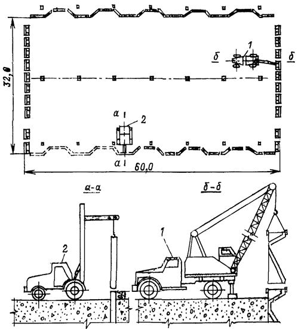
Схема раскладки опалубки межблочных швов
1 - автокран СМК-7; 2 - автопогрузчик 4946 грузоподъемностью 5 т.
Состав звена
Монтажник 6 разряда - 1 человек
Монтажник 5 разряда - 1 человек
Монтажник 4 разряда - 1 человек
Монтажник 3 разряда - 1 человек
Сварщик 4 разряда - 1 человек
Такелажник 3 разряда - 2 человека
Штукатур 3 разряда - 1 человек
Водители погрузчика - 2 человека
Итого: 10 человек
Пояснения к технологической карте
1. Настоящая технологическая карта составлена на опалубочные работы в блоке с плановыми размерами 32×60 м.
2. В состав технологической карты включен весь комплекс работ от подачи опалубки к месту монтажа до полной их установки.
3. Установку элементов опалубки межблочных швов необходимо вести при превышении ранее установленной опалубки над поверхностью бетона не менее чем на 0,5 м.
4. Высота сборной железобетонной опалубки поперечных швов принята 1,5 м, продольных швов - 3,0 м.
5. Подача сборной железобетонной опалубки к месту монтажа и непосредственно монтаж ведутся вилочным автопогрузчиком грузоподъемностью до 5 т.
6. Для движения автотранспорта в межблочных швах оставляется проезд шириной 3,5 - 4,0 м. В проемах на продольных швах опалубка не выставляется, а на поперечных швах опалубка выставляется в процессе бетонирования блока.
7. При монтаже опалубки швов необходимо руководствоваться действующими в строительстве нормативными документами.
8. Состав звена подобран из условия роста бетонной кладки 3,0 м в месяц.
9. Трудозатраты определены по действующим СНиП и ЕНиР.
Ведомость потребности в механизмах
|
Наименование механизмов |
Тип, марка |
Количество |
|
Автосамосвал грузоподъемностью 12 т |
На базе МАЗ |
2 |
|
Малогабаритный электротрактор |
М-663Б |
4 |
|
Пакет из 4 вибраторов |
ИВ-34 или ИВ-90 |
2 |
|
Вибраторы |
ИВ-80 |
4 |
|
Автопогрузчик грузоподъемностью 5 т |
4046 |
1 |
Технико-экономические показатели
|
Наименование показателей |
Показатель |
|
Объем бетона в блоке, м3 |
1440 |
|
Трудозатраты на 1 м3 бетона, чел.-дни. |
|
|
подготовка поверхности |
0,019 |
|
укладка бетона |
0,006 |
|
уход за бетоном |
0,001 |
|
Затраты на 1 м3 бетона, маш-смены |
|
|
электротракторы М-663Б |
0,008 |
|
автосамосвалы |
0,004 |
|
вибраторы |
0,018 |
|
Расход материалов на 1 м3 бетона |
|
|
бетон, м3 |
1,02 |
|
полиэтиленовая пленка, кг |
0,03 |
|
вода, м3 |
0,008 |
|
воздух, м3 |
13,40 |
|
шланги прорезиненные d = 25 мм, пог. м |
0,004 |
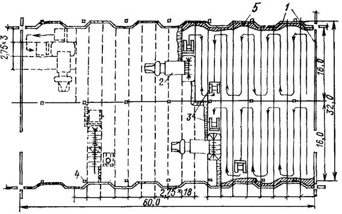
Схема бетонирования блока 32×60 м
1 - сборная железобетонная опалубка; 2 - бетоновозный автосамосвал; 3 - малогабаритный электротрактор с навесным оборудованием; 4 - колонны шатра; 5 -зона проработки бетона ручными вибраторами.
1-е звено. Подготовка поверхности и уход за бетоном
Бетонщик 3 разряда - 2 человека
Бетонщик 1 разряда - 14 человек
2-е звена. Транспорт, разравнивание и уплотнение бетонной смеси
Бетонщик 3 разряда - 2 человека
Бетонщик 2 разряда - 2 человека
Водители, электротракторов - 4 человека
Водители автосамосвалов - 2 человека
Состав бригады: 26 человек
Пояснения к технологической карте
В состав технологической карты включены следующие виды работ:
1. Подготовка бетонных поверхностей блока перед бетонированием, включающая: а) промывку поверхностей водой из шлангов под напором со сбором мусора и грязи в бадьи и отвозкой за пределы блока; б) продувку поверхности бетона сжатым воздухом с удалением остатков воды и мусора, за пределы блока; в) удаление остатков воды, отделяющейся от бетона; г) очистку путей движения бетоновозов от грязи.
2. Укладка бетонной смеси в блоки бетонирования.
Бетонирование ведется двумя параллельными полосами по 16 м шириной с обслуживанием отдельной полосы самостоятельным комплектом оборудования, обеспечивающим подвозку, разравнивание и уплотнение бетонной смеси. Для разравнивания и уплотнения бетонной смеси приняты малогабаритные электрические тракторы М-663Б с навесным оборудованием, бульдозерным ножом и пакетом из четырех вибраторов ИВ-34 или ИВ-90.
Производительность по укладке, разравниванию и уплотнению бетонной смеси в блоке должна быть не ниже 40 м3/ч на один комплект оборудования, бетонирование полос ведется от низовой грани плотины к верховой захватками по 2,75 - 3,00 м с отставанием одной полосы от другой на две захватки.
В труднодоступных местах: около опалубки и в местах пересечения швов - бетонная смесь укладывается вручную и прорабатывается вибраторами ИВ-80 соответственно в количестве 1,5 и 3 % от объема укладываемой смеси.
Транспорт бетонной смеси ведется автосамосвалами грузоподъемностью 12 т.
3. Уход за свежеуложенным бетоном.
Уход за бетоном заключается в поддержании во влажном состоянии поверхности до ее зачистки (полиэтиленовая пленка и т.п.) и в организации поверхностного охлаждения после зачистки.
Примечание. В трудозатратах учтены все виды работ, связанные с подготовкой блоков к бетонированию, укладкой бетона и уходом за свежеуложенным бетоном, трудозатраты подсчитаны по соответствующим ЕНиР и СНиП.
Состав бригады подобран из условия роста бетонной Кладки блока 3 м в месяц.
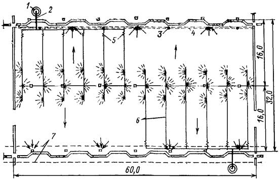
Схема системы поверхностного полива и отвода воды из блока
1 - колодец; 2 - трубы Æ 50 мм; 3 - скважины Æ 100 мм; 4 - канализационная труба; 5 - резиновые шланги; 6 - перфорированные трубы Æ 25 мм; 7 - граница потерны.
Технико-экономические показатели
|
Наименование показателей |
Показатель |
|
Объем бетона в блоке, м3 |
1440 |
|
Трудозатраты на 1 м3 бетона, чел.-дни |
|
|
поверхностный полив |
0,003 |
|
увлажнение поверхности |
0,004 |
|
дренаж поверхностных вод |
0,002 |
|
Расход материалов на 1 м3 бетона |
|
|
трубы стальные Æ 25 - 50 мм, пог. м |
0,095 |
|
прорезиненные шланги, пог. м |
0,002 |
|
кровельная сталь, кг |
0,002 |
|
вода, м3 |
38 |
Примечание. В трудозатратах, приведенных на 1 м3 бетона, учтены все работы, связанные с организацией и эксплуатацией системы поверхностного полива, увлажнения и отвода воды за пределы блока.
Трудозатраты подсчитаны по соответствующим ЕНиР и СНиП.
Мероприятия для охлаждения бетонной кладки в зависимости от времени года (ориентировочные данные)
|
Виды мероприятий |
Объем бетона, % от годового |
Сезон бетонирования |
|
Поверхностный полив |
40 |
С апреля по октябрь* |
|
Поверхностное увлажнение |
35 |
Весенне-осенний |
|
Без дополнительных мероприятий |
25 |
Зимний |
* В апреле и октябре полив ведется на открытых участках.
Ориентировочный состав звена
1. На монтаж системы поверхностного полива и дренажа
Сантехник 4 разряда - 3 человека
Сантехник 3 разряда - 3 человека
2. На поверхностное увлажнение
Сантехник 2 разряда - 1 человек
Итого: 7 человек
Примечание. В трудозатратах, приведенных на 1 м3 бетона, учтены все работы, связанные с организацией и эксплуатацией системы поверхностного полива, увлажнения и отвода воды за пределы блока.
Трудозатраты подсчитаны по соответствующим ЕНиР и СНиП.
Пояснения к технологической карте
Настоящая технологическая карта составлена на работы, связанные с поверхностным охлаждением бетонной кладки и отводом воды из блока с плановыми размерами 32×60 м.
В состав технологической карты включен весь комплекс работ по монтажу, демонтажу и устройству систем поверхностного полива, увлажнения и отвода воды с блока.
1. Поверхностный полив
Конструкция системы поверхностного полива, состоит из магистральных труб диаметром 50 мм, подключенных к главной системе технического водоснабжения. К магистральным трубам при помощи прорезиненных рукавов присоединяются трубы диаметром 25 мм, перфорированные с двух сторон. Размер отверстий перфорированных труб 2 мм. Вся система монтируется на поверхности блока.
Для равномерного распределения температуры на поверхности блока должны соблюдаться следующие условия:
а) Общая площадь поверхности, не имеющая текущей воды, не должна превышать 10 %, при площади отдельных пятен не более 10 м3, которые должны систематически увлажняться.
б) Поверхностный полив должен начинаться сразу же после снятия цементной пленки и прекращаться за 12 ч до укладки следующего по высоте слоя.
в) Толщина слоя воды должна быть в пределах 2 - 8 мм при скорости движения не выше 0,8 м/с. Основным параметром для регулирования расхода воды является температура воды, сливающейся с блока. Она не должна превышать 19 °С.
Включение систем поверхностного полива производится при температуре наружного воздуха выше 20 °С на затененных поверхностях. Ориентировочный осредненный расход воды на поверхностный полив затененных поверхностей составляет около 10 л/с на 1000 м2, а открытых - вдвое больше.
В технико-экономических показателях расход воды на 1 м3 бетона принят из расчетной продолжительности полива с мая по октябрь, в течение этого времени укладывается 40 % годового объема бетона.
2. Увлажнение бетонных поверхностей
Увлажнение бетонных поверхностей водой ведется из прорезиненных шлангов диаметром 25 мм, подключаемых к магистралям технического водоснабжения. Частота полива определяется стройлабораторией и ТУ, но не реже, чем раз в сутки. Увлажнение осуществляется в весенне-осенний период, в течение которого укладывается примерно 35 % годового объема бетона.
3. Отвод воды поверхностного полива и увлажнения
Отвод воды поверхностного полива и увлажнения с блока в потерну осуществляется через отверстия, оставленные внутри колонн шатра, расположенных над потернами, и через системы скважин диаметром 100 мм, проходящих непосредственно в бетоне. В этом случае вода через отверстие сбрасывается в канализационную трубу, установленную на отметке, предшествующей уровню, с которого начинается поверхностный полив. По канализационным трубам вода сбрасывается в потерну. Оформление водосбросных отверстий в местах примыкания к трубам канализации осуществляется путем врезки в них стальных труб диаметром 100 мм.
СОДЕРЖАНИЕ